Элементы ультрамышления может освоить каждый и применять их можно почти в любой сфере жизни.
Эта книга учит нас выправлять наши собственные каяки: справляться с невзгодами и преодолевать препятствия.
А еще она учит нас использовать ультрамышление применительно к разным жизненным возможностям. Например, никогда не сдаваться – кроме тех случаев, когда правильнее отступить; отрезать для себя возможность выбора, концентрируясь на цели; заменять негативные внутренние истории позитивными, и некоторым другим интересным и полезным методам воплощения в жизнь наших желаний и стремлений.
Трэвис говорит о том, как важно знать собственные сильные и слабые стороны и не стесняться просить о помощи, когда она нужна.
Самая длинная олимпийская дистанция – марафон, 42,2 километра, или 26,2 мили. Примерно таков же предел дальности для большинства любителей бега и непрофессиональных спортсменов. И это действительно очень много и очень сложно. Но существует целая система забегов на дистанции, превышающие марафонскую, – то есть на сверхмарафонские, на ультрадистанции. Они начинаются от 50 километров, затем идут дистанции 50 миль, 100 километров и 100 миль… но и это не предел, есть еще суточные и многодневные забеги. Иными словами, слово «ультра» применительно к забегам и гонкам означает дистанцию свыше 42,2 километра, ее называют также сверхмарафонской.
Это стихия Трэвиса Мэйси. Мир не просто дальних, а сверхдальних дистанций.
В этой книге много историй: о соревнованиях серии Leadville Race Series, о маунтинбайке в Китае, о забегах через штат Юта, о каякинге в Швеции – и о многом другом, потому что его опыт показывает, что человек действительно может добиться любых поставленных перед собою целей. Главная их задача – донести до читателя те принципы и правила, которые актуальны для вас и ваших начинаний. Принципы, которые закалили его, поддерживали и вели через все длинные и напряженные мили в очень отдаленных местах и в очень сложных обстоятельствах.
Он называет это ультрамышлением (Ultra Mindset); эти принципы – психологические установки на серьезные испытания, на сверхнагрузки.
Мэйс и Пэм Мэйси провели вместе всю жизнь: встречаться они начали еще в школе, в родном городе Ливония, штат Мичиган. Оба получили высшее образование в Мичиганском университете, а затем Мэйс продолжил учебу на юридическом факультете университета Детройта и окончил его в 1980 году. После этого они переехали в Колорадо. Они искали местечко в Денвере, но однажды в выходные оказались в Эвергрине во время ежегодного родео. Городок чем-то покорил их, и они решили пустить корни на Диком Западе. Чтобы завести юридическую практику в другом штате, требуются годы, и Мэйс медленно шел к этому. В выходные он подрабатывал мойщиком окон, чтобы сводить концы с концами. Для его сына до сих пор остается загадкой, как отцу удавалось находить время в выходные, чтобы кататься со мной, тренироваться и мыть окна – но думаю, это тоже часть «хорошего психологического тренинга»: если хочешь, найдешь способ.
Шел июль 1988 года, мне было пять. Это одно из самых ранних моих воспоминаний – оглядываясь назад, я понимаю, что именно тогда ковалось мое ультрамышление. Мы с ним регулярно катались на велосипедах, для нас это было все равно что поиграть в мяч во дворе. Папа любил разные виды спорта. Прежде, еще в колледже, он играл в лакросс, но позже его фаворитами стали бег и триатлон. В 1986 году он даже финишировал в соревнованиях Ironman на Гавайях – 3,8 километра вплавь, а затем 180 километров на велосипеде и 42-километровый марафон. Многие спортсмены и сейчас считают это одним из самых крутых достижений в мире мультиспортивных гонок на выносливость.
Юрист по профессии, мой отец был вполне типичным представителем тех, чья зрелость пришлась на 1970-е. Тогда, вдохновленные победой на олимпийском марафоне 1972 года Фрэнка Шортера – выпускника Йельского университета и тоже юриста, – целое поколение образованных белых мужчин, вроде отца, зашнуровали свои кеды и обычные кроссовки и выбежали на дороги. Так возникло явление, которое часто именуют первым беговым бумом.
Марк Мэйси – все называли его просто Мэйс – кроме бега любил крутить педали и плавать; он был фанатом «Тур де Франс» за десять лет до того, как мир впервые услышал о Лэнсе Армстронге.
Взбираясь на холмы Євергрина бок о бок со мной, папа учил меня работать изо всех сил и раздвигать границы своих возможностей. Но он вовсе не был тираном на колесах. Он знал, что не нужно слишком давить на пятилетнего малыша, и понимал, что такие поездки должны быть в радость. Главной его целью было не сделать из меня крутого велосипедиста, а помочь мне выработать стойкость, которая пригодится в жизни.
Мэйс Мэйси, который прежде имел только опыт марафонских забегов, зарегистрировался, настроился и вышел на стомильный забег Leadville Trail 100.
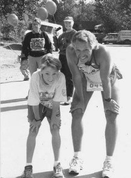Сегодня Ледвилл – легендарное место среди бегунов и других любителей больших дистанций, но солидной истории у него нет. Он появился лишь незадолго до Гражданской войны, когда один золотоискатель обнаружил заветный металл в «наших холмах». Окрестности Ледвилла оказались самыми золотоносными на Западе, здесь делались огромные состояния. В конце 1880-х Ледвилл переживал бум, сюда тянулись типы вроде Дока Холлидея, Джесси Джеймса и Буффало Билла. Происходили перестрелки и ограбления почтовых дилижансов, были, конечно же, шикарные салуны с треньканьем пианолы и карточными играми, оперные дома и дома терпимости и все, что только можно себе представить в городке на Диком Западе.
Сто лет спустя все изменилось. Шахта Клаймакс, на которой долгое время держалось благосостояние города и которая в свое время была ведущим мировым поставщиком молибдена (элемента, используемого в основном в производстве стали), неожиданно закрылась в начале 1980- х, и почти все жители городка лишились работы. Целый регион оказался на грани экономического краха
Работником шахты был и уроженец Оклахомы Кен Клоубер, жесткий, упрямый парень; живи он в 1880-е, наверняка стал бы неподкупным шерифом. Он входил в городскую администрацию и решил найти способ спасти свою новую родину, где после закрытия шахты уровень безработицы вырос до 90 процентов. Клоубер слышал о знаменитом, ставшем уже традиционным ультрамарафоне Western States 100, проходившем в Калифорнии. Он подумал, что организация такой гонки в Ледвилле может спасти дело, хотя бы потому, что при участии в забеге на 100 миль человеку нужно где-то ночевать и это может дать толчок развитию туристической отрасли
Клоубер отмахнулся от предостережений (а может, и припечатал врача крепким словцом), и в 1983 году состоялся первый Leadville 100. Все 45 участников выжили. В очень скором времени Ледвилл стал обязательным пунктом в списке бегунов-экстремалов со всей страны.
В духе культурного наследия Дикого Запада, ледвиллский забег начинается с выстрела в 4:00 утра.
На половине пути, в маленьком заброшенном городке Уинфилд, в глубокой долине, окруженной гигантскими заснеженными вершинами, Мэйс еще был в порядке. Он увидел семью и решил устроить импровизированный семейный пикник. По прошествии времени я думаю, что он уже тогда не вполне трезво оценивал ситуацию (поверьте, пикник посреди стомильного забега не назовешь хорошей тактикой). Однако мы расстелили одеяло и ели сырные кесадильи и фруктовый салат. Помню, был чудесный горный полдень, солнечный, теплый и ясный.
Папа увлеченно рассказывал о забеге. Он пробежал половину дистанции за 12 часов – 50 миль! – и был уверен, что сможет пробежать вторую половину примерно за то же время, поэтому незачем спешить – контрольное время 30 часов. «Чувствую себя куда лучше, чем рассчитывал!» – говорил он весело.
Мы поели, и он убежал дальше, обернувшись и помахав нам рукой, прежде чем скрыться за деревьями.
Становилось все тяжелее, и стало совсем плохо, когда Мэйс добрался до отрезка трассы, где нужно было одолеть около 900 метров подъема на перевал Хоуп, чтобы снова спуститься к Ледвиллу. К тому времени, когда он добрался до маленького городка Твин-Лейкс у подножия перевала, на отметке 60 миль, он превратился в шаркающее наглядное пособие по травмам перенапряжения. Мышцы бедер стали такими жесткими, что он едва мог двигаться. Стопы болели – позже у него диагностировали усталостные переломы плюсневых костей обеих стоп. Его тошнило от обезвоживания. Фонарик из супермаркета сел через пару часов после заката, и он пробирался по каменистой лесной трассе на ощупь.
Однако в какой-то момент, одолеваемый бессвязными мыслями, он, должно быть, осознал, что может не уложиться в 30-часовое контрольное время. Тогда Мэйс собрался и нашел в себе силы продолжать двигаться.
Семья ждала на финишной черте в Ледвилле. Ждали, ждали и ждали.
Наконец, Мэйс Мэйси появился в конце дороги, прозванной местными «Бульвар». Этот участок грунтовки длиною в три километра приводит к окраине Ледвилла. Он выглядел очень плохо, и я до сих пор помню его остекленевший взгляд. Он напугал меня. Время подходило уже к десяти утра второго дня забега. Накануне вечером мы поселились в местном отеле, посмотрели телевизор, немного поспали, а потом, примерно в четыре утра, снова вышли на трассу. А папа бежал уже вторые сутки. Все это время он был где-то там, на трассе, сражался с добровольно принятыми на себя болью и трудностями.
Мэйс бежал на фоне нависающих над городом Скалистых гор, среди рельефных очертаний которых был и перевал Хоуп, самая высокая точка трассы. Когда он появился на Шестой улице, контрольное время уже почти истекло. Часы отсчитывали последние минуты, и взгляд его был прикован к финишной растяжке, за которой стояли его родные. Глаза его были налиты кровью и воспалены, и все же – и это непостижимо – полны жизни и энергии. Предельно изможденный, он едва мог говорить, но искренне улыбнулся своим детям. Они выбежали, чтобы подержать его за руки, пока он шаркал по красному ковру последние 20 метров до финиша.
Он финишировал последним.
Но это было совершенно не важно. Показанное им время тоже не имело значения: 29 часов 56 минут, он финишировал всего за четыре минуты до контрольного срока. На тот момент это был самый близкий к контрольной отсечке финиш в истории Ледвиллского сверхмарафона.
С тех пор Мэйс пробежал «Ледвиллскую сотню» еще четырежды и получил престижный приз: яркую пряжку на ремень, выдаваемую бегунам, уложившимся в 25 часов. И, что еще важнее, в каждой из этих следующих четырех гонок он финишировал полным сил. Он готовился к ним и больше никогда не позволял себе недооценивать эту дистанцию. Его карьера спортсмена на сверхдлинные дистанции вышла далеко за пределы Ледвилла. Он четырежды поднимался на Пайкс Пик в гонке Pikes Peak Quad, где нужно пробежать 100 миль, набрав в общей сложности около 9500 метров высоты. Он пробежал «Марафон песков» (Marathon des Sables), многодневный забег на сверхдлинную дистанцию, где нужно преодолеть более 150 миль по пустыне Сахара, и сверхмарафон Badwater, который многие считают самым сложным однодневным забегом: он стартует в Долине Смерти, однозначно самом жарком месте планеты. В противоположных по экстремальности условиях отец трижды выиграл Iditashoe, стомильный забег в снегоступах по трассе великого Идитародского пути на Аляске. Он даже был участником легендарных приключенческих гонок Eco-Challenge, каждая из которых длилась неделю, их транслировали по каналу «Дискавери» в 1990-е годы. (Продюсером был Марк Бернетт, впоследствии он взял эту идею за основу для одного из первых масштабных реалити-шоу, Survivor – «Выживший».) Он был одним из немногих, кому довелось восемь раз участвовать в недельных гонках в самых экстремальных местах планеты.
Поступив в 1997 году в среднюю школу Эвергрина, как и многие начинающие спортсмены, попробовал себя и в футбольной, и в баскетбольной командах, и в сборной по легкой атлетике.
Он стал в итоге бегуном на длинные дистанции. Его время на этой дистанции, 9:49, было лучшим в штате (и в кроссе он тоже стал рекордсменом штата), но этого было мало, чтобы вызвать к нему интерес тренеров из крупных колледжей. И все-таки самое сильное влияние на него в те годы оказал баскетбол.
Тренер Хаэбе, что тренировал местную школьную команду по баскетболу, был из тех, кто работает на износ. А от своих подопечных он ждал еще большего. Иногда он мог вспылить и накричать.
У Мэйси был как раз такой случай.
– Трэвис! Ты нас угробишь! – крик тренера эхом отдавался в притихшем спортзале.
– Черт возьми, тренер! Я знаю! – заорал мальчик в ответ (на самом деле словечко было покрепче, чем «черт возьми»).
Все на скамейке застыли: «Нам не послышалось? Мэйси, вежливый тихоня Мэйси, только что покрыл матом… тренера Хаэбе?»
Может, это была юношеская заносчивость или взыграло задетое самолюбие. А может быть, он просто устал мельтешить на фоне крупного парня из команды соперников. Как бы то ни было, тренеру, похоже, понравилась моя реакция. Он знал, что парня нужно было сильно разозлить, чтобы он сказал такое, и Хаэбе чувствовал, что Мэйси огорчен и задет этой ситуацией даже больше его. Он только кивнул и вернул парня на площадку. Трэвис добился того, что ребята из команды тоже завелись. Если уж Мэйси так разозлился, то и они могли поднажать в игре. Тот матч команда выиграли.
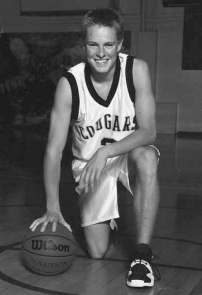Через несколько дней после окончания школы в 2001 году Трэвис с отцом полетели на Аляску, в Анкоридж, и арендовали пикап с жилым модулем на крыше. В планах на неделю было только бегать, любоваться дикими местами, ловить рыбу и говорить о будущем. Белой полярной ночью, лежа на той крыше, парень читал «Бег с “Буйволами”», рассказ Криса Лира о том, как он провел год в команде бегунов на дальние дистанции в Университете Колорадо в Боулдере. И сразу же Мэйси мл. решил, что хочет быть как эти ребята. Из общей массы они пробились на высший национальный уровень благодаря упорной работе под руководством тренера Марка Ветмора. Отец его поддержал.
Приехав домой, Трэвис продолжал мыть окна – он мыл их с 16 лет – в той же местной конторе, где много лет назад работал его отец (семейные связи не имеют отношения к ультрамышлению, но такова жизнь!) Мытье окон – не самое завидное занятие, но при должном старании и планировании можно неплохо зарабатывать. К тому же у него было достаточно возможностей для тренировок. Его приняли в Университет Колорадо, и он вовсю готовился к состязаниям по кроссу, планировавшимся на самое начало учебного года.
Через неделю после начала осеннего семестра должен был пройти специальный отборочный забег для ребят, еще не получивших стипендии или не попавших в предварительный состав команды. Три лучших бегуна получали заветное место в команде и стипендию. Остальные уходили ни с чем. Трэвис Мейси был первым, обогнав примерно десяток других ребят. Это произвело впечатление на тренера Ветмора. Он видел, как парень старается и какой результат это дает. И его наградой было место в команде.
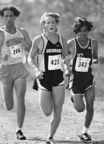На последнем курсе и бег, и триатлон отошли на второй план: он переключился на новый и очень популярный вид спорта – приключенческие гонки.
Любое состязание, где нужно ползать по грязи или проходить армейскую полосу препятствий, сегодня получает гордое имя «приключенческой» гонки. Но все же настоящие приключенческие гонки – это отдельный вид спорта на выносливость. В нем задействованы ключевые дисциплины бега/трекинга, маунтинбайка, работы с веревками (дюльфер, навесная переправа и прочее) и гребли (на каяках, рафтах, каноэ и т. д.), а также ориентирование с картой и компасом. Приключенческие гонки – командный вид спорта, в большинстве гонок участвуют смешанные команды из четырех человек, которые соревнуются около недели подряд (в гонках экспедиционного типа) или этапами по 8–12 часов ежедневно с возможностью немного отдохнуть в палатке ночью (в «поэтапных» гонках). Дикая природа, большая продолжительность, огромные расстояния, сложные требования к ориентированию, разнообразие дисциплин и нехватка сна делают такие гонки настоящим испытанием.
Первыми классическими приключенческими гонками были Raid Gauloises и Eco-Challenge, и именно последняя принесла широкую известность этому виду спорта, когда продюсер Марк Бернетт начал транслировать ее по каналу «Дискавери» в конце 1990-х – начале 2000-х годов. Eco Challenge вдохновил Бернетта на его следующий большой проект – шоу Survivor («Выживший»). Серия передач о людях, заброшенных на необитаемый остров, стала грандиозным хитом канала CBS и дала начало новой эре реалити-телевидения. Именно приключенческие гонки, и в частности Eco-Challenge, легли в основу идеи трансляции испытаний участников в «реальных» условиях (хотя со временем эти условия становятся все более нелепыми).
На гонке Wulong Mountain Quest в Китае для привлечения лучших команд со всего мира разыгрывается солидный денежный приз. Майк и его команда, финишировавшие в предыдущем году в тройке лидеров, собирались туда вернуться. Один из четверки не мог участвовать, и Трэвиса позвали выступить вместо него. Может быть, Майк подумал, что если Трэвис Мэйси хотя бы вполовину так хорош, как Марк Мэйси – Клоузер знал Мэйси ст. по гонке «Эко-Челлендж», – то он может стать неплохой заменой. Для парня большой честью стало уже то, что его позвали выступить вместе с ними. Остальные члены команды тоже были спортсменами высшего класса. Среди них была (это обязательное правило для всех команд) женщина, Гретхен Ривз, успешная профессиональная велогонщица в дисциплине маунтинбайк, из долины Вейл в Колорадо. Четвертым был Джей Генри, бывший чемпион США по маунтинбайку.
Первый день гонки прошел хорошо. К началу второго дня команда были в группе лидеров с еще парой команд. Во второй день Мэйси с Джеем Генри хорошо поработали педалями на большом подъеме, по очереди задавая темп; Трэвису при этом нужно было еще поглядывать на карту и компас, закрепленные на специальном велопланшете, – он был штурманом команды.
За день до этого он несколько часов изучал карты, чтобы выбрать самый быстрый оптимальный маршрут среди мириад лесовозных дорог, грунтовок и пешеходных троп.
Вдруг раздался выстрел. Оказалось, это сломалась спица на колесе Гретхен. Трэвис с Джеем и Гретхен были просто счастливы передышке. Майк же сразу взялся за дело и соорудил временную замену, чтобы дотянуть до конца второго этапа – всего их было пять, по 8–12 часов ежедневно.
В тот день команда пришла вторыми, вернулись в отель и три-четыре часа готовили снаряжение для следующего дня. Была уже поздняя ночь, а утром их ожидал ранний подъем на гонку.
У спортсмена из другой команды на следущий день возникла механическая неисправность – порвался шланг гидравлического тормоза. Это серьезная проблема, без тормозов далеко не уедешь. Починить такую поломку тоже непросто. Опытному веломеханику в мастерской с полным ассортиментом запчастей и инструментов может понадобиться пара часов, чтобы снять испорченные детали, поставить новый шланг, заполнить его тормозной жидкостью, тщательно удалить пузырьки воздуха, отрегулировать и проверить новую тормозную систему. Майк бросился помогать чинить чужой велосипед. Его не остановили ни позднее время, ни то, что они находились в китайской глуши без всяких веломехаников, ни отсутствие велостенда и инструментов, ни сложный гоночный этап на следующее утро, ни то, что ему было за пятьдесят, когда большинству его соперников не было и тридцати.
Поздно ночью велосипед был отремонтирован, а участник мог продолжать гонку.
И все это для парня из другой команды. Самый опытный, самый титулованный спортсмен гонки отдал часы своего времени, чтобы починить велосипед, который не имел никакого отношения ни к нему, ни к его команде. Но все, кто его знал, понимали, что это просто был Майк. Работать не покладая рук, всегда быть готовым действовать и помогать другим – это черты, которые я очень в нем уважаю./p>
Делать все, что ты делаешь, с полной отдачей; каждый день «выходить на бой» позитивно настроенным и полностью включенным – этим элементам ультрамышления Трэвис научился у Майка Клоузера в далекой стране, в разгар одного из самых напряженных испытаний в его жизни.
Они финишировали в той гонке вторыми, уступив только команде здоровяков из Новой Зеландии. Это была последняя гонка Мэйси мл. с Майком, и то, чему он научился тогда, остается со ним и поныне, и этот урок сыграл, в самом широком смысле, важнейшую роль в его личных и командных победах.
Первая приключенческая гонка Трэвиса Мэйси состоялась в 2003 году. Он только что окончил второй курс программы бакалаврата в Университете Колорадо и уже знал, что его будущее в спорте не будет связано с легкой атлетикой. Поэтому, когда он с его приятелем Марком Фалендером, тоже занимавшимся скалолазанием, услышали о суточной гонке в горах Уосатч, в штате Юта, они решили: «Участвуем!»
Первые несколько часов гонки парни нарезали бесконечные круги на каяке с верхней посадкой, пытаясь направить его в нужную сторону (было бы значительно легче, если бы они удосужились хоть раз сесть на весла до гонки). Неудивительно, что на первый КП они пришли последними. Но в гонке был большой велосипедный этап, а парни были сильными велосипедистами – и они были молоды. Весь оставшийся день ребята жали на педали, а затем всю ночь бежали со всех ног. В итоге пришли на финиш вторыми в общем зачете из примерно 50 команд – достойный результат для новичков.
20-мильный забег на снегоступах на Бирюзовом озере (Turquoise Lake 20-Miler) в январе 2004 года.
Этот высотный забег проходит в Ледвилле и начинается на высоте более 3050 метров в лагере Sugar Loafin’. Соревнование проводится уже 20 лет подряд и горячо любимо сверхмарафонцами, любителями приключенческих и шоссейных гонок и всеми любителями хорошенько помучиться, из Колорадо и не только.
В тот год Трэвис приехал в Ледвилл из Боулдера, где у него как раз начинался второй семестр, специально на этот забег. Это была его первая гонка на 20 миль, но вообще он уже отлично умел бегать на снегоступах.
Забег на 20 миль на Бирюзовом озере был для него выходом на новый уровень. Это уже олимпийский уровень испытаний – только в реально опасных условиях, как напоминает нам бланк отказа от претензий для участников соревнований.
Автором этого эпического зимнего мероприятия был Том Собаль, директор гонки и легендарный участник горных забегов. Собаль выигрывал гонки на снегоступах и гонки по пересеченной местности, а еще он чемпион в уникальном виде спорта, которым занимаются только в Скалистых горах Колорадо, – гонке с осликами, где нужно бежать с навьюченным осликом в поводу, что отсылает к историческим для этих мест временам золотой лихорадки. Гонка с осликами, безумный вид спорта – мероприятие очень зрелищное. В идеале ослик должен бежать с вашей скоростью. Но некоторые животные предпочитают сами задавать темп. Поэтому на гонке можно видеть ребят, которых тащат за собой ослики. Но Том был не из таких. У него был легендарный четвероногий партнер по имени Мэйнард, и они бежали слаженно, в одном темпе, будто всю жизнь тренировались.
Собаль и сам был спортсменом редкого вида, реликтом тех ранних дней бегового бума, когда участников в забегах было мало и каждый из них был серьезным соперником. Он был директором гонок, участвовавшим – и выигрывавшим! – в собственных гонках. Когда все собирались на старте, он выходил вперед и обращался к участника: «В этом году верхний слой льда очень тонок, будьте готовы к тому, что бежать придется чуть не по колено в шуге. Не забудьте взять запасную куртку на случай сильного ветра. И помните, что нужно заботиться друг о друге и играть честно!»
Затем он возвращался на старт, вставал в общую линию, поворачивался и кричал: «Марш!» Из двадцати гонок, проведенных с 1990 по 2009 год, Собаль выиграл пятнадцать.
Трасса гонки дважды пересекает Бирюзовое озеро, которое в это время года похоже на слоеный ледяной пирог: корочка льда сверху, около фута мокрой шуги под ней и твердый озерный лед снизу. Бег по нему напоминает бег через торт-мороженое. Первые три мили проваливаешься в ледяную кашу по колено. Это ни с чем не сравнимые ощущения: посреди зимы вылезти из ледяного горного озера и пробежать 17 миль в промокших ботинках, покрытых коркой снега и льда.
В одной особо памятной 20-мильной гонке финишировали только 25 из 64 стартовавших спортсменов, это невероятно низкий процент, особенно с учетом того, что в таких гонках участвуют исключительно спортсмены, имеющие хороший опыт горных забегов.
Гонка проходила в условиях снежной пурги, и группа лидеров потеряла ориентацию, пересекая озеро на первом этапе гонки. К тому же разметку трассы занесло, и было совершенно непонятно, куда двигаться. Как вереница обреченных полярников, сбившихся с пути и попавших в лапы свирепого шторма, участники брели, радикально отклоняясь от нужного курса. В конце концов они вышли на дорогу, идущую вокруг озера; летом по ней проходит часть трассы сверхмарафона Leadville 100 и разные велосипедные маршруты, зимой – лыжня и снегоходный путь. Собаль, который, как обычно, был в числе лидеров, осмотрелся и объявил, что они вышли не с той стороны озера. На минуту в рядах лидеров возникло замешательство. Что делать? Кричать? Возмущаться? Обвинять Собаля в том, что он проводит гонку в таких условиях, или ругать себя за глупость, что пошли на такое? Нет, они сбились в кучу и быстро приняли демократичное решение бежать по своим следам обратно, чтобы пробежать-таки полную дистанцию. Будет ли она по прежнему равна 20 милям? Никто не знал и никого это не волновало. Соревнования на сверхдлинные дистанции в экстремальных условиях не для тех, кто склонен беспокоиться по мелочам. Им нравится считать себя людьми «перспективы» – возможно, сумасшедшими, но всегда стремящимися быть максимально «дальнозоркими» в отношении предстоящего пути.
Умение видеть перспективу работает и в жизни. Ты упорно работаешь и создаешь детальный план действий. Но зачастую продуманные планы рушатся по независящим от нас обстоятельствам. В таких ситуациях нужно быть находчивым; быть готовым подстроиться под изменившиеся условия, не упуская из виду конечную цель.
Наглядный тому пример – та 20-мильная гонка на Бирюзовом озере в условиях сильной пурги. В тот день победителем на новой импровизированной трассе стал Трэвис Мэйси. Сам он полагает, что ему это удалось благодаря тому, что он быстро переключился с внутреннего источника мотивации («Люблю бег на снегоступах… Будто в детство вернулся… Отличная возможность побегать зимой… Бирюзовое озеро очень красиво, и так здорово бежать по нему») на внешний («Если продержусь последние десять миль на этой нестандартной трассе, то одержу победу и получу редкую возможность обойти саму легенду колорадского снегоступинга!»).
Гонка Adventure Xstream Expedition Moab.
Адам Чейз собрал команду, спонсируемую крупной сетью магазинов по продаже снаряжения для активного отдыха Eastern Mountain Sports и фирмой Salomon, крупнейшим мировым производителем спортивных товаров.
Привлекательности той гонке добавляло то, что она проходила в пустынной местности Моаб, этой «нирване для любителей бездорожья», как окрестил ее один блогер. Это название стало почти синонимом выражения «экстремальный спорт». В Моабе есть огромные каньоны, резкие перепады температур, река Колорадо, велотрасса Slickrock Bike Trail, а также (по крайней мере во время дождей) тонны «моабской грязищи», особо трудной для преодоления разновидности водонасыщенного грунта, сформированного из преобладающих здесь песчаников.
Xstream Expedition представляла собой почти четыре дня непрерывной гонки по этой пустынной «стране чудес» с этапами, обычными для приключенческих гонок: трекинг, горный велосипед, каякинг и работа с веревками. Четверки участников должны были пройти многие знаменитые тропы, каньоны и реки Моаба, а также пересечь высокие горы Ла-Саль к востоку от самого городка Моаб. Гонка проходила в октябре, а значит, возможно, предстояли крайне жаркие дни в пустыне и холодные (а может быть, и снежные) ночи в горах.
Адаму на тот момент исполнилось сорок, он был капитаном команды, но имел и постоянную работу юриста по налоговому праву. Кроме того, он писал статьи в журналы о трейловом беге и беге по бездорожью. Это был опытный, увлеченный гонщик и ловкий предприниматель. Не считая двадцатиоднолетнего новобранца из Колорадо, он набрал себе в команду опытных и сильных гонщиков.
Эндрю Хэмилтон занимался скоростными восхождениями, он покорил все 54 пика Колорадо высотой свыше 14 тысяч футов (4250 метров), один за другим, за какое-то нереально короткое время. Весь сезон он был лидером команды на этапах маунтинбайка, а если вам этого мало, этот разносторонний спортсмен был еще и лучшим гребцом.
Эмили Баэр была, безусловно, лучшим бегуном команды. Она была самым юным участником, финишировавшим в забеге Hardrock 100, гонке на 100 миль, которая считается даже более сложной, чем гонка в Ледвилле, потому что проходит на больших высотах и имеет больше подъемов. В Хардроке ей было всего 23 года, это очень юный возраст для спортсмена-сверхмарафонца высокого уровня (многие сверхмарафонцы достигают пика своих способностей только под сорок, а то и за сорок лет). Она жила в удаленной местности в горах со своим мужем Эрнстом, который на этой гонке входил в команду поддержки вместе с Мэйси ст.
Ну и, наконец, в команде был несостоявшийся студент-медик, 21-летний Трэвис Мэйси, который мог определить почти все жизненно важные органы в анатомическом атласе, но еще никак не проявил себя в роли достойного участника приключенческих гонок. Но он был сыном Мэйса, которого знали все и который тоже должен был присутствовать на гонке – на случай, если кому-то захотелось бы сравнить («Ты неплохой гонщик, Трэвис, но ты, конечно, не Мэйс, хоть ты и Мэйси»).
Кроме престижа в мире приключенческих гонок западных штатов команда-победитель получала призовой фонд в размере 8000 долларов, то есть по 2000 долларов на человека. Это хорошие деньги для региональной гонки. А для двадцатилетнего новичка, который зарабатывал по девять долларов в час занятиями с футболистами из Университета Колорадо, это был воистину счастливый лотерейный билет. Когда Трэвис узнал, сколько может заработать, он внезапно почувствовал себя готовым, полным сил и рвущимся в бой.
В 00:01 был дан старт (да, эта гонка начинается через минуту после полуночи… чтобы держать всех в форме), и они оказались на трассе вместе с 45 другими командами.
Чтобы попасть в горы Ла-Саль из Моаба, нужно набрать около 1200 метров высоты по крутым дорогам и узким тропкам, но тяжкий труд был вознагражден сполна, когда команда достига полосы золотого осинника, этакой декорации «осень в пустыне», к следующим суткам трекинга от точки до точки.
В длинной приключенческой гонке ко второму дню вырабатывается определенный ритм движения. У них он предполагал короткие встречи с Мэйси ст. и Эрнстом Баэр на контрольных точках, примерно каждые шесть часов, где их загружали едой, водой и новым снаряжением
Они выехали из лагеря Голд Бар на реке Колорадо к западу от Моаба и пыхтели, поднимаясь на велосипедах на горное плато по бесконечному каменистому метко названному Длинному каньону, где нужно набрать 655 метров высоты за 12 километров.
Солнце давно село. Трэвис помнит, как, с трудом вкручивая педали и наматывая мучительные, выматывающие ярды, думал о том, что больше всего ему хочется остановиться, положить велосипед и лечь спать. Хватит уже этой идиотской гонки. А органическая химия была в конце концов не так уж плоха. Но тут он вспоминал первую отцовскую стомильную гонку в Ледвилле. Вероятно, он был не готов и наверняка много раз хотел остановиться. Но не остановился. И дошел до финиша. И среди главных причин для этого была мысль об ожидающей его в конце награде: встрече с семьей.
И парню нужно было сосредоточиться на его награде. Пусть это покажется пошлым, но в его голове мгновенно нарисовался значок доллара. Две тысячи зелененьких. Что поделать, если его цель была не такой белой и пушистой, как у его отца? И он продолжал двигаться.
Где-то на подъеме по каньону Адам посоветовал всем остановиться и вздремнуть минут десять. Сон урывками обычное дело в таких ситуациях, и даже краткий отдых действительно помогает восстановить душевные и физические силы. Эта мысль вывела Трэвиса из ступора, и, когда я уже готов был поддержать ее и свернуться на тропе счастливым клубочком, его до глубины души потряс крик Эндрю: «Адам, не все же гребаные богатенькие юристы!»
Их это как громом поразило. Вот вам и пример потери самоконтроля, да еще и от мягкого, вежливого и всю дорогу спокойного человека. Эндрю выразился не очень красиво, но он был прав в том, на чем им нужно было сосредоточиться в тот момент.
Его призыв сработал лучше, чем короткий сон на тропе, и вскоре они уже катили вперед, разрабатывая стратегии и снова работая в команде. Переключившись на внешнюю мотивацию, они позволили передохнуть отделу мозга, отвечающему за самоконтроль. В них снова проснулся здоровый голод.
А гонка продолжалась. После спуска на велосипедах примерно на две тысячи футов к точке у Мостов-близнецов они развернулись и поехали обратно вверх. После спуска, подъема и снова спуска нужно было пробежать отрезок легендарной Тропы Кокопелли, а затем несколько часов грести по реке Колорадо. Удерживая перед носом эти внешние морковки, команда продолжала стараться изо всех сил, сражаясь с недосыпом, жарой пустыни и крайним утомлением на последних сутках гонки (в приключенческих гонках они считаются уже финишной прямой).
Они подошли к финальному этапу, где нужно было три часа грести на каяках по глубокому и эффектному песчаному каньону на реке Колорадо. Момент подъема на велосипедах мог стать той точкой, где они провалили бы гонку и более опытная команда нагнала бы их и отняла победу. Но воображаемые морковки в их головах в тот день были спелыми, крупными и манящими. Они точно знали, что единственный путь к победе, даже на этом финальном этапе гонки, – продолжать удерживать в голове конечную цель и жать изо всех сил до самой финишной черты. Они усиленно гребли на финиш и выиграли ту гонку! Хлопнули друг друга по рукам, вскинутым в победном жесте.
Explore Sweden 2005 года была первой международной приключенческой гонкой Трэвиса Мэйси, и он все еще был зеленым двадцатидвухлетним новичком в команде суровых и опытных атлетов, боровшейся за место в тройке сильнейших против лучших команд из Швеции, Франции, Новой Зеландии, Австралии, США, Норвегии, России, Польши и других стран.
На первом этапе гребли их двухместный каяк перевернулся в крупной реке с сильным течением и кромкой льда вдоль берега. После кошмарного заплыва в бурной ледяной воде нам удалось перевернуть его обратно и продолжить движение. Длинное узкое озеро, в которое впадала та река, было покрыто коркой тонкого льда. Они бежали по этому льду, волоча за собой каяки, к транзитной зоне – зоне смены этапов – на другом конце озера. При этом постоянно проваливались под лед, и приходилось цепляться ледорубами, чтобы вылезти из воды. Ледорубы считались обязательным пунктом умопомрачительного списка снаряжения для гонки; в него входили и спасжилеты с мокрыми гидрокостюмами, не дававшие утонуть в ледяных шведских водах. Но в них мерзли. Было ужасно холодно, особенно подо льдом. Преодолев таким образом около мили, ребята добрались до транзитной зоны. Полностью разделись прямо на морозе, натянули велосипедную одежду, собрали свои велосипеды из коробок, в которых их доставили в этот удаленный район, и двинулись в сторону болот.
И это была только первая половина первого дня.
Потом был бесконечно длинный этап ориентирования в болоте, покрытом тонкой корочкой льда (достаточной тонкой, чтобы ломаться под ногами, достаточно твердой, чтобы в кровь резать лодыжки), под которой было по колено ледяной воды. В гонке был и этап волока: это когда несешь или катишь на тележках каяки с одной акватории на другую. А они тяжелые. На одном участке им пришлось тащить их по дороге почти 20 миль.
Дни в северных широтах стояли длинные, члены команды падали поспать на часок прямо у тропы и просыпались, стуча зубами от холода и плохо соображая, где мы.
Трэвис страдал от недосыпа, был измотан и полностью разбит, когда зашел в бытовку у той стоянки дальнобойщиков и зачем-то посмотрелся в зеркало. Налитые кровью глаза, спутанные волосы, опухшее красное лицо, губы в герпесных волдырях. Чувствовал он себя даже хуже, чем выглядел, и был абсолютно уверен, что надолго его не хватит. Он начал подумывать о том, что Даррен, Пол и Карен зря позвали его в команду. Их впечатлили его характеристики и победа команды EMS/Salomon в Моабе, поэтому они решили попробовать. Но это было выше его сил – и у Трэвиса уже ехала крыша.
Разглядывая себя в зеркале, он начал обдумывать, как бы мирно завершить гонку, прямо здесь и сейчас. Он представлял себе радости теплого номера в отеле, где окажется уже через час, стоит только поднять руки вверх и сказать «баста». И тут он понял, что наступил момент истины. Послушается ли он своего тела, головы и чувств, отчаянно кричавших, что верное решение – прекратить гонку? Или продолжит бороться за свою мечту финишировать в первой многодневной приключенческой гонке на высоком международном уровне
Он вспомнил об отце на его первом Ледвиллском сверхмарафоне и о том ультранастрое, которому он его научил. Вспомнил Собаля, Лемонда, Ульриха и других крутых парней, которыми много лет восхищался и которые тоже когда-то оказывались в таком положении. Они не бросали все ради комфорта, и он не должен. И, конечно, была еще команда. Вчетвером они стояли на линии старта, сплоченные общей целью, обещавшие не сдаваться. И выбросить сейчас белый флаг значило нарушить свое обещание.
И, что еще важнее, в нем заговорило эго. Да, эго. Оно заявило, что он могу и должен это сделать. И он это сделал.
Через сорок миль они добрались до зоны смены видов, где уже в четвертый или пятый раз за гонку разобрали велосипеды, упаковали их в специальные коробки и погрузили в большую фуру, которой предстояло отвезти их на финиш.
И продолжили борьбу на знаковом этапе той гонки, сложном полуторасуточном отрезке, включавшем трекинг, бег на лыжах и на снегоступах, зимний альпинизм и виа феррату (это популярный в Европе вид горного отдыха, где скальные участки проходятся с использованием заранее вбитых в породу для страховки анкеров и протянутых тросов; при этом нужны петли, оттяжки и карабины, но не нужны веревки). Они тащили с собой снаряжение для всех этих дисциплин и выбирали, каким способом лучше двигаться – пешком, на снегоступах или на лыжах, в зависимости от условий.
Условия же вскоре совсем испортились: посреди ночи, когда они пыхтели на беговых лыжах по горной местности, началась пурга. К тому времени все уже почти засыпали на ходу и опирались на палки, чтобы не упасть. Карен сильно стерла ноги, но они знали, что остановка в пургу может стоить жизни.
Трэвис шел почти в тридцати метрах впереди – на пределе видимости, еще немного, и команда потеряла бы его, – когда заметил маленькую бревенчатую хижину, размером не больше чем 3 на 3 метра и по самую низкую крышу занесенную снегом. Но она казалась надежным укрытием – в их ситуации все что угодно было лучше той завывающей стихии, в которой мы потерянно брели.
Даррен начал ледорубом и снегоступами откапывать из-под снега дверь. И вскоре они обрели Святой Грааль приключенческих гонок: сухое помещение с печкой, дровами и газетой для растопки. Через несколько минут огонь уже ярко горел.
Может быть, потому, что этот час они провели в теплой комнате, а не на ледяной стоянке, но в этот раз они восстановились гораздо лучше.
И они двинули наружу, в наступающее уже ясное ранее утро, готовые завоевать мир или хотя бы свернуть горы в этом суровом краю. Целый день команда двигалась пешком и на лыжах и ближе к вечеру добрались до финиша. Они пересекли его шестыми.
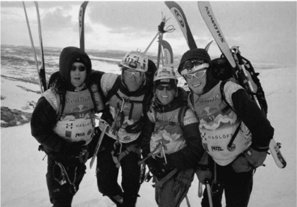Следующие несколько лет, пытаясь стать профессиональным спортсменом, Трэвис соревновался с Джосайей Миддах в гонках на снегоступах, в забегах, триатлонах, приключенческих и мультиспортивных гонках самого разного рода. Он был одним из тех немногих, кому удавалось обходить его. Но это случалось редко, и, хотя Трэвис старался изо всех сил и на каждой гонке честно верил, что сможет его победить, более чем в 20 гонках Мэйси мл. финишировал только вторым.
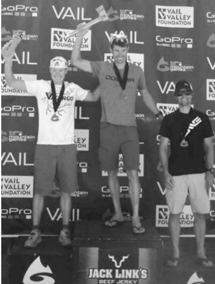Трэвис Мэйси считался хорошим профессиональным спортсменом, но был вечным серебряным призером, эрзац-бегуном рядом с Джосаей!
Трэв бесконечно менял и корректировал свою программу тренировок, был очень изобретателен. И все же его обходили. Трэв учился. Применял научный подход. Использовал различные гаджеты. Но он все равно его обходили. Он выкладывался. Работал на износ. И его продолжали обходить. Трэвис добавил психологическую тренировку. Закалял свой дух. Становился все более выносливым и несгибаемым. Но и тогда Джосайя обходил его.
На том этапе Трэвис осознал, что продолжает нянчиться с задетым самолюбием, когда пришло уже время отбросить его подальше и попросить о помощи.
Когда вы задвигаете свое эго подальше, происходит любопытная вещь. Казавшиеся прежде абсурдными идеи сразу же превращаются в очевидные решения. Как только он направил свои мысли в другое русло, наступил момент прозрения, и он четко понял, кого нужно просить помочь довести его тренировки до совершенства, которое позволит одолеть Джосайю. Самого Джосайю
Под руководством Джосайи Трэвис добился большей эффективности тренировок, научился получать больше за меньшее время. Ему пришлось немало попотеть и помучиться, но мы же помним, да, это все хороший психологический тренинг? Это сделало его более сильным атлетом. И на самом деле, его крупнейшие личные достижения появились после того, как Джосайя начал руководить его тренировками.
В мае 2005 года Трэвис окончил университет, а летом ему предложили должность преподавателя в Денверской академии – там преподавала его девушка Эми, – и он отказался. Он выбрал приключенческие гонки
Он еще дважды участвовал в экспедиционных гонках с командой SOLE – теми ребятами, с кем они прошли гонку Explore Sweden. Они выдержали трудные пять дней на EcoMotion Pro в Бразилии, в грязи и под дождем; на велоэтапе двоим из их команды пришлось целый день ехать на велосипедах без одной педали – потому что у одного велосипеда сломались обе. Весь тот длинный этап они работали в команде, толкали и буксировали Пола и Даррена.
Они финишировали вторыми в экспедиционной гонке Desafio de los Volcanes, проходившей в Патагонии, на удаленной южной оконечности Южной Америки. Гонка начиналась на южном побережье Чили и шла через всю страну до Сан-Мартин-де-лос-Андес, красивого горного городка в Аргентине. Однажды ночью в сильный ветер и ливень они наткнулись посреди большого озера на другую команду, у которой перевернулись оба каяка. Ветер опрокинул лодки, они наполнились водой, и четверо нахлебавшихся воды аргентинцев не могли перевернуть их обратно. Положение было отчаянным, все четверо стремительно замерзали. Благодаря замечательной работе Пола и Даррена на веслах они смогли отбуксировать команду и каяки к берегу, где они развели костер и согрелись. Команда дошла до финиша.
По возвращении домой Трэвис какое-то время держался на временных подработках, подменял других преподавателей и работал в кафешках, пока они с Дэйвом Маки и Данэль Балленджи не нашли для своей команды солидного спонсора – компанию Spyder, производителя лыжной экипировки.
Платили ему 1250 долларов в месяц, неплохие деньги для холостого двадцатидвухлетнего парня, к тому же Spyder взялась финансировать их регулярное участие в приключенческих гонках по всему миру – примерно раз в полтора месяца. Теперь Мэйси зарабатывал деньги как профессиональный спортсмен и был в восторге от этого! Они собрали очень сильную команду и хотели сразу же начать бороться за первые места.
Это удалось им в 2006 году на гонке серии Raid World Series в Австралии, которую команда Spyder выиграла.
Они победили на нескольких этапах гонки в Мексике у очень сильных соперников, постоянно наращивая свою физическую форму, навыки командной работы и ориентирования и общий уровень команды.
После этого они нацелились на гонку Primal Quest: на тот момент это была самая крупная и прибыльная гонка в Америке. Проходила она в самое пекло моабского зноя, в июле.
В рамках подготовки Трэвис решил за полтора месяца до старта поучаствовать в горном велозаезде Kokopelli Trail Mountain Bike Race.
Пара сотен участников, стартовавших в этой неформальной велогонке по знаменитой «Тропе Кокопелли» со стороны Моаба, должна была проехать 142 мили и финишировать на другом конце тропы около местечка Лома, Колорадо.
Они стартовали в полночь, и всего через несколько часов гонки Трэвис упал и раздробил ключицу так, что никаких шансов добраться на велосипеде до ближайшего городка, Фруты, у него не было. (К счастью, тот случай был единственным, когда ему пришлось прервать одиночную гонку по причине травмы.)
За ним ехал парень, по иронии судьбы носивший мрачное прозвище Дум. Он остановился, чтобы помочь Мэйси, и пожертвовал при этом своей гонкой. Дум подхватил оба велосипеда и помог ему пройти несколько миль до возвышенности, где ловил мобильный. Парня трясло от переохлаждения, это вызывало сильную боль в сломанной ключице, но наступающий чистый и ясный рассвет он встретил с удивительным чувством покоя, счастья от того, что он жив, и благодарности за великодушие незнакомого ему человека.
Через два месяца, в августе 2006 года, ключицу уже скрепляли титановый стержень и болты, и он был готов участвовать в составе команды Spyder в чемпионате мира по приключенческим гонкам (ARWC) в Швеции.
Когда Марк Бернетт перестал проводить гонки Eco-Challenge, переключившись на телевидение, чемпионаты мира ARWC фактически стали главными соревнованиями на международной арене.
Каждый год гонки проходят в разных странах, и в 2006 году в Швеции собрались лучшие команды мира. Фаворитами стали многократные чемпионы – команда Nike PowerBlast, большинство участников которой были из Колорадо, но их, несомненно, ждало очень жесткое соперничество со стороны четверок со всего мира, спонсируемых компаниями Merrell, Buff, The North Face, ну и Spyder, конечно.
Данэль не участвовала в гонке из-за травмы, и Трэвис с Дэйвом позвали в команду Даррена Кларка и Фриду Розенберг, сильную спортсменку из Швеции.
Снега на чемпионате мира было значительно меньше, чем на прошлогодней гонке, но гонка снова проходила по удаленным северным районам.
За четыре дня чемпионата ARWC в Швеции команде Spyder довелось испытать и победы, и поражения. Они начали полными сил, целый час лидировали в пешем подъеме на крутой горнолыжный склон, первыми вышли на велосипедный этап: 20 миль по трейловой трассе за два часа. Все шло хорошо, они лидировали на чемпионате мира!
Обстоятельства вмиг переменились, когда у Фриды слетела цепь с задней звездочки и ее зажало между кассетой и спицами. Трэвис вытаскивал цепь вместе с Дэйвом, но к тому времени, как команда снова стала мобильной, их уже обогнали все, кто мог. Одни на опустевшей трассе они заново стартовали в гонке – на этот раз с последнего места.
Но что хорошо в длинных гонках (и в жизни в целом) это то, что почти всегда есть время отвоевать упущенное, если беречь себя, не терять спокойствия, сохранять позитивный настрой и двигаться эффективно. Так они и делали следующие несколько дней и обходили одну за другой команды, переправляясь по головокружительным троллеям, забываясь кратким сном в жилищах из оленьих шкур, двигаясь на каяках по морю среди косаток, проходя сложные этапы ориентирования в густых лесах, пробираясь по извилистым пещерным ходам с подземными реками и шагая по горам и ледникам. И все это время, прокладывая себе путь через этот край природных чудес, они знали, что медленно, но верно наверстывают упущенное время.
В какой-то момент им нужно было преодолеть длинный ночной этап на роликах. Эта дисциплина не входит в стандартный набор для приключенческих гонок, но шведы любят роликовые коньки, и этот этап был вовсе не катанием по парку. Это были 35 миль по холмистой местности, включая как минимум один большой подъем по грунтовке, где нужно было снять ролики и бежать вверх в носках (если, конечно, вы не догадались тащить с собой обувь; Трэвис не догадался).
Финишная прямая команды Spyder началась с шестичасового горного трекинга, где предстояло попасть на ледник, к которому вели разные пути. Мэйси был штурманом и отвечал за выбор пути. Выбрать грунтовку к востоку – безопасный, но более длинный путь? Пойти на северо-восток по отмеченной на карте тропе, которая, возможно, ведет в нужном направлении? Или идти прямиком на север, ровно вниз по пути водостока, кратчайшим путем, который может завести в непролазный кустарник или к обрыву? Мэйси был «хранителем» карты и знал, что правильное решение требует него предельной внимательности и оперативности.
«Рискнем! По водостоку!» Его боевой клич достиг желаемого эффекта. Они припустили вниз по пути, проложенному водой. Решение было рискованным: они могли выиграть час (потому что путь был прямее и короче) или потерять три часа и даже больше (если бы подошли к обрыву и пришлось поворачивать назад). Но команда верила штурману, а внимательное изучение карты говорило, что там можно пройти.
Как оказалось, по ручью действительно можно было спуститься, они прошли узким проходом между скалами и вышли к большой реке, куда впадал ручеек. Риск был оправдан! Команда, покинувшая транзитную зону за несколько часов до них, теперь была всего лишь по ту сторону реки, и Spyder продолжали сокращать расстояние. Гонка подходила к концу, и нужно было делать ставку: пан или пропал. Они пошли на риск, сделали все возможное – и отыграли немного драгоценного времени. После трека по леднику они оказались в зоне смены этапов с двумя другими командами, которые боролись за второе место. Второе место в мире! Онм были полны надежд и торопились выйти на этап каякинга, думая только о том, за что борются на гонке – за то, чтобы финишировать в тройке лидеров на чемпионате мира.
Через четыре часа гребли – по расчетам должно было быть не больше трех – команда решила обсудить текущий этап гребли.
– Хм, разве мы не должны были уже приплыть? Что там с картой? По компасу мы правильно идем?
– Ты о чем? Разве карта не у тебя?
Карты не было ни у одного из них, каждый понадеялся на другого. Когда карту вытащили из грузового отсека (где ей точно было не место), выяснилось, что большая река, по которой они шли, пересекала в одном месте крупное водохранилище. Чтобы попасть в нужную точку, командам нужно было аккуратно пройти вдоль берега и вновь выйти в реку, поворачивавшую на юг.
Опьяненные мыслями о близости финиша и о целях гонки, они ушли далеко вглубь водохранилища и почти два часа гребли на восток, перпендикулярно нужному направлению. То есть нужная им река – и команды соперников, стремительно двигавшиеся к финишу, – была теперь в двух часах обратного хода. Ребята были страшно злы, но вернулись на трассу и продолжили борьбу. Они были сильными, опытными спортсменами и пытались говорить друг другу что-нибудь позитивное. И они концентрировались. Это оправдало себя на следующем участке, где нужно было пролезть очередную обводненную пещеру, а потом полночи идти пешком в гидрокостюмах, потому что было ужасно холодно.
К последней транзитной зоне они подошли около полуночи, быстро распаковали и собрали велосипеды и выехали на последний 40-мильный спринтерский заезд до финиша.
Простые, но однообразные действия, такие как гребля и езда на велосипеде по шоссе, становятся невероятно сложными задачами, когда страдаешь от недосыпа. Все последние 40 миль к ним медленно, но неустанно подкрадывались сонные чудища. Ребята поглощали противную черную жижу, кофейный концентрат, по нескольку пакетиков за раз:
– Не спи! Крути педали! Мы сможем!
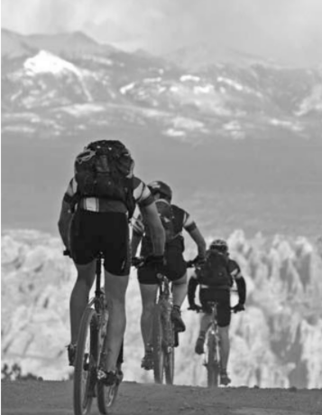Трэвис обернулся перекинуться словами ободрения с командой. Когда понял, что Дэйва нет, то до скрежета выжал тормоз, развернулся и увидел, что Дэйв заснул, упал на обочину и продолжает спать прямо там. До финиша оставалось менее получаса.
Что тут можно сделать? Поднять его и понести? Дэйв очень крепкий парень, но, если ты так устал, что не просыпаешься, даже упав с велосипеда, обычные способы побудки уже не срабатывают. Дэйв отключился. И остальная команда присоединилась к нему. В тот момент холод твердого шведского асфальта был чудеснее чистой постели в шикарном отеле. Через полчаса Мэйси почувствовал рассветную свежесть и сонно сел. Он знал, что призовых мест им уже не видать, но слишком устал, чтобы злиться. И если кого-то и можно было винить, то только его за ту ошибку на реке – думал он. Их провал в Швеции много лет не давал ему покоя, и однажды он смог понять, как могли случиться два таких глобальных промаха – сначала гребля не в том направлении, а затем неудача на таком, казалось бы, простом велоучастке перед финишем, когда их мотивация была на пике.
По поводу мышления в категориях «что я делаю» и «зачем я это делаю» Хэлворсон пишет: «Думайте о своих целях в ключе ЗАЧЕМ, когда вам нужен толчок к действию, нужно сохранить мотивацию или избежать соблазнов. Рассматривайте свои цели в аспекте ЧТО, когда сталкиваетесь с чем-то особенно сложным, незнакомым или требующим долгого изучения».
В 2008 и 2009 годах команда взяла серебро в гонке Primal Quest, на тот момент крупнейшей и самой престижной в Америке экспедиционной приключенческой гонке. Мы выиграли экспедиционную гонку Best of the West в канадских провинциях Британская Колумбия и Альберта, где нужно было много часов подряд пробираться через дебри огромных поваленных деревьев на крутых склонах гор в удаленной местности (одна из команд проснулась среди ночи от того, что их палатку обнюхивал волк).
Еще Трэвис выиграл состязания по квадратлону на горе Тейлор в Нью- Мексико, в которых его отец участвовал, когда Трэв был еще совсем малышом. Их дисциплины включали шоссейную велогонку, бег, лыжи и снегоступинг, и все это на пути к вершине горы Тейлор, высота 3437 метров, а затем вниз в обратной последовательности.
Трэвис Мэйси стоял на пьедесталах почета в гонке на горных велосипедах TransMexicana (многодневной велогонке от побережья до побережья по югу Мексики), в велогонке 24 Hours of Moab (сутки по сложной кольцевой трассе в Моабе), в соревнованиях Teva Mountain Games Ultimate Mountain Challenge (четыре гонки за два дня: каякинг, трейловый бег, горный и шоссейный велосипед), в приключенческой гонке KEEN Great Ocean Road (три дня по Австралии) и ультрамарафоне Rock and Ice Ultra (140 миль бега и снегоступинга по северо-западным территориям Канады за шесть дней).
В его жизни вне спорта также произошли крупные события. В 2008 году они с Эми поженились на вершине горы в Колорадо, а в 2009 году переехали в Эвергрин.
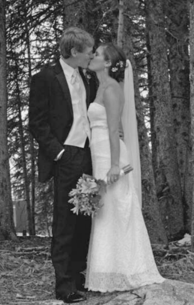Шел 2009 год, и Трэвис прилетел в ОАЭ участвовать в приключенческой гонке Abu Dhabi Adventure Challenge, шестидневных соревнованиях по самой прекрасной и безжалостной местности на планете. Всю следующую неделю ему предстояло бежать, крутить педали, грести, плыть и лазить по бескрайним песчаным дюнам, безлюдным трассам, морским просторам, крутым скалам и невероятным городам – всему тому, что делает Абу-Даби истинным сокровищем Среднего Востока.
Абу-Даби был страшно далек от Эвергрина во всех отношениях. Но для участника приключенческих гонок это был важный шанс: ставки были высоки, 40 смешанных четверок из 20 стран мира боролись за самый крупный денежный приз в этом виде спорта. И, как обычно бывает на международных приключенческих гонках, среди участников было непропорционально много новозеландцев. Закаленные гонками в суровом климате на крутых подъемах новозеландского Саутленда, опытные спортсмены из команд Qasr Al Sarab и ADCO (обе представляли на этих гонках местных спонсоров) могли побороться за места в тройке лидеров.
Команда Salomon / Crested Butte: Трэвис Мэйси, Дениз Макхэйл, Джон Браун (Джей-Би) и Эрик Салливан (Салли).
По выстрелу из стартового пистолета 160 участников рванули на горных велосипедах от линии старта.
Джон, у которого был большой соревновательный опыт, буквально за минуту до старта понял, что они сэкономят драгоценное время, если выйдут на велоэтап в беговых кроссовках и смогут без задержек перейти после него к бегу. Творческий подход оправдал себя, и они вышли на пятикилометровый беговой этап шоссейного бега одними из первых. В транзитной зоне, где вся толпа бежала по пляжу к дворцу и потом обратно на асфальтовую дорожку, команды шли на всяческие ухищрения, чтобы заявить о себе.
Быстро скинув одежду и натянув очки, Salomon / Crested Butte нырнули в живописную бухту, окаймляющую Абу-Даби. Где-то далеко на другом конце бухты едва виднелись флажки финиша. Для некоторых участников этот заплыв должен был стать серьезным испытанием.
Чувствуя себя уверенно после долгих тренировок в бассейне перед гонкой, Трэв взял в воде хороший темп. Увидев узнаваемый логотип Ironman на шапочках немецкой четверки, приближавшейся слева, он решил, что всю оставшуюся дистанцию буду просто держаться за ними и применять технику драфтинга. Не тут-то было: они промчались мимо, как торпеды
Потерпев поражение в плавании, их команда быстро перегруппировалась и перешла на участок гребли: он закрывал этап приключенческого триатлона и включал две дистанции по две мили, между которыми был небольшой этап ориентирования на песчаном острове. Бег по песчаным дюнам на этом этапе мог дать некоторое представление о том, что нас ждало через два дня в куда больших масштабах, и большинство команд неплохо показали себя в ориентировании с картой и компасом.
Salomon / Crested Butte наскоро приняли душ на берегу и восстановили водный баланс, и после полудня гонка возобновилась: начался этап 20-мильного морского каякинга от Абу-Даби до удаленного островка на севере. Старт проводился в стиле «Ле-Ман». Вот как это выглядело: они выстроились в линию вдоль пляжа, по сигналу рванули по песку к двухместным каякам, расставленным вдоль берега, и в общей суматохе начали спускать их на воду и залезать в них (у каждой команды было по два каяка с парусами).
Опыт триатлетов в гребле оказался скромным, зато у новозеландцев с этим было все в порядке.
Первые 500 ярдов Трэвис с Джоном лидировали, оставив немцев позади. Но потом одна из новозеландских команд обошла их, они уходили вперед с такой скоростью, будто шли на моторах. Через два километра они вышли из-под прикрытия острова и оказались во власти больших волн открытого моря. Следующие несколько часов они гребли на открытой воде и иногда, при нужном ветре, ставили парус для дополнительного ускорения.
После сложного дня наши натруженные мышцы наслаждались заслуженной ночной передышкой на том крошечном острове. Ночной вид был шикарен: небо, полное звезд, и огни большого города вдалеке. Они провели воистину незабываемый походный вечер в компании хороших друзей, и им почти удалось забыть хотя бы на пару часов о том, что они собрались здесь со всего света, чтобы победить друг друга в изнурительной гонке по пустыне.
Следующим утром они вышли на рассвете, чтобы пройти на веслах 34 мили обратно до Абу-Даби. На это ушло около шести часов, что очень немало для гребли на морском каяке. На спутниковых снимках, по которым они ориентировались в гонке (обычных топографических карт этого района не было), виднелись песчаные острова, поросшие густым кустарником и окруженные водой. Проходы между ними могли быть и очень глубокими, и совсем мелкими. Весь этот день главной задачей стал поиск участков глубокой воды, и преимущество получали команды, которым удавалось найти на мелководье участки чуть глубже и получить преимущество в скорости. Кроме того, первостепенное значение на водном этапе имели гидратация – поддержание водного баланса – и питание.
Измотанные за два дня соревнований бесконечной греблей, команды поковыляли к автобусу, которому предстояло отвезти нас вглубь пустыни – на следующий этап. За два дня каякинга Salomon / Crested Butte проиграли по времени так много, что полная победа над новозеландцами становилась заведомо недостижимой. Но они знали, что впереди этапы бега и горного велосипеда и они позволят им показать себя с лучшей стороны. Победа даже в одном этапе этой гонки была бы огромным достижением, и они поставили перед собой такую цель.
Пустыня Руб-эль-Хали – что в буквальном переводе означает «Пустая четверть» – вызывает в воображении образы древних исследователей, бедуинских караванов и странников, бредущих вперед в поисках оазиса. Одна из величайших песчаных пустынь в мире, она кажется необитаемой, как луна. Бесконечные дюны уходят за горизонт, прерываемые только плоскими, безжизненными солончаками. Никакой растительности. Никакой воды. Даже зимой температура держится под сорок. Животный мир представлен несколькими исключительно хорошо приспособившимися видами, умеющими выживать в таких условиях.
В такой обстановке предстояло пробежать 75 миль. Когда в 4:30 утра зачирикал будильник, выяснилось, что довольно много команд пакуют вещи не для 75-мильного забега по пустыне, а для короткой поездки на автобусе обратно в пятизвездочный отель, к отдыху и изысканным коктейлям у бассейна. Здесь, в точке невозврата на краю пустыни, некоторые команды приняли решение вернуться. И никто не мог винить их за это. Для Salomon / Crested Butte вопрос выигрыша в гонке, вероятно, тоже уже не стоял, потому что они проиграли лидерам несколько часов на длинных этапах гребли. Тревоги добавляло и объявленное организаторами прошлой ночью ограничение: на каждую команду выделялось определенное количество бутылок воды на трех пунктах снабжения в пустыне. Это объяснялось ограниченным количеством ящиков, которые они могли доставить в столь удаленную местность, и необходимостью обеспечить водой все команды, не только лидеров.
Salomon / Crested Butte рассчитали, что этой воды хватит, чтобы выжить на этапе, но к концу своего пребывания в пустыне они будут сильно обезвожены. Нечего и говорить, что в тот момент автобус до отеля казался весьма заманчивой альтернативой.
И тут Трэвис подумал об отце. В его спортивной карьере часто случалось такое: в определенный момент его посещали мысли о тех уроках, что он получил в годы детства, болея за отца на соревнованиях, катаясь с ним на велосипеде по холмам или общаясь с его друзьями.
В те утренние сумерки, глядя на мигающие цифры будильника на наручных часах, Трэвис вспомнил папино «правило 4:30 утра».
На часах как раз было 4:30, и они стояли перед выбором. Сдаться, похвалить себя за то, что сделали что могли, и пойти в автобус, увозящий к комфорту. Или воспользоваться тем, что они рано встали, и заново настроить команду на успех, сделать ранний подъем трамплином в новый день, где они будем упорнее всех, выносливее всех и мужественнее всех и попробуют достичь новых высот в спорте, таких, что ими можно будет гордиться до конца своих дней.
– Хорошее будет утро, ребята, – сказал Трэв команде, когда они повернули из лагеря к старту, в противоположную от кондиционированного автобуса сторону.
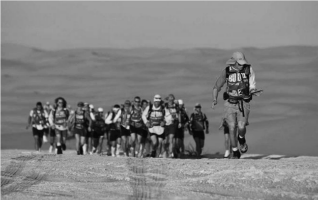Им предстоял трекинг на 75 миль по песчаным дюнам. Команда Salomon / Crested Butte быстро вырвалась вперед: они горели желанием задействовать свой большой беговой опыт и использовать преимущества высотных тренировок. Только вот куда именно надо бежать? В шоссейных гонках обычно бывают указатели направления, отметки расстояния. Но не здесь. Команда рассчитывала, что штурман покажет им верное направление. Они бежали, скользили вниз и вновь лезли вверх, и Трэвису нужно было на ходу ориентироваться в незнакомой местности, на которую не дали надежных карт, потому что дюны все время находятся в движении. В других гонках он мог использовать как ориентиры горы, долины, реки и границы растительности. Здесь же, куда ни кинешь взор, лишь бескрайнее море песка, меняющееся от каждого дуновения ветра. Условия были, мягко говоря, сложными, но он чувствовал упоение от того, насколько бег по глубокому песку похож на бег по снегу. Мэйси повторял про себя: «Трэв, ты играешь на своем поле». И это работало.
Поскольку в этой гонке существовала реальная опасность затеряться в пустыне, организаторы разрешили использовать GPS-навигаторы, которые обычно запрещены в приключенческих гонках. Но посреди пустыни в навигаторе Трэвиса села батарейка. Недалеко бы они ушли, если бы он не умел пользоваться картой и компасом – навигационными приборами старой школы, – чтобы определить нужное направление.
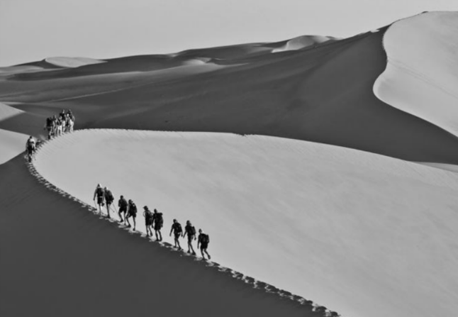Хотя дюны все время движутся под воздействием ветра и эрозии, солончаки остаются примерно на одних и тех же местах. Зная об этом, Трэв вел команду от солончака к солончаку. Между их плоскими пятнами простирались песчаные дюны, и быстрее всего получалось двигаться по их гребням. Он находил гребни, ведущие примерно в нужном направлении, и продолжал на ходу сверяться с компасом – и надеяться на лучшее, – так они добирались до следующего солончака.
Наступила ночь, но команды продолжали закладывать зигзаги в никуда по компасу под сияющим звездным небом. Ориентирование становилось все более сложным, в игру вступили темнота и недостаток сна, но Мэйси удавалось сохранять внимание к деталям и думать о том, «что» он делаю (а не «зачем»); продолжать оставаться начеку и двигаться в нужном направлении.
Когда они остановились ночью на обязательный 90-минутный отдых, они почти на полчаса отставали от группы лидеров, куда входили и новозеландцы.
Джон задавал хороший темп, и несколько минут спустя они догнали ведущую группу из шести команд. Их мечта выиграть этап в крупнейшей приключенческой гонке мира становилась возможной. Гонка продолжалась!
Поднявшись на последнюю дюну, они увидели вдалеке финиш. За плечами было 75 миль и 19 часов бега. До финиша оставался лишь почти отвесный 60-метровый спуск с песчаной дюны и 135 метров по солончаку. Когда все семь команд рванули изо всех сил в финальном спринте, в голове Трэвиса возник старый тренер школьной сборной по баскетболу в Эвергрине. «Жми, Трэв! – орал воображаемый тренер Хаэбе. – Пришло время выложиться!»
Линия финиша – одинокая надувная арка посреди бескрайней пустыни – была уже совсем близко. Salomon / Crested Butte жали изо всех сил, переглядываясь иногда с другими мчащимися параллельным курсом командами. И вот они вышли вперед на метр, потом еще на несколько... и, наконец, пересекли финишную черту. Команда Salomon / Crested Butte выиграла этот этап. «Правило 4:30» сработало, оно всегда работает.
В 2011 в самый канун Нового года, после долгой и очень нервной ночной поездки в метель до больницы в Денвере, родился сын Трэвиса, Уайатт.
Как муж и отец он понимал, что продолжать вести прежнюю вольную жизнь участника приключенческих гонок будет сложно. Он уже не мог просто собраться и улететь на край земли, как другие его товарищи по команде. И еще в его прежде неизменно солнечных прогнозах начали появляться тучи сомнений и уныния. Их команда дважды финишировали четвертыми в крупных приключенческих гонках в Китае. Оба финиша стали большим разочарованием. Они были талантливой, опытной командой и ехали на эти гонки – Wulong Mountain Quest и Ordos Adventure Challenge, – будучи уверенными, что достойны занять место в тройке лидеров.
После возвращения с тех гонок Трэвис начал ловить себя на мыслях о своей роли в не слишком удачных выступлениях команды. Мог ли он лучше прокладывать маршруты? Задавать более жесткий темп в ключевые моменты? Увереннее вести за собой людей? Упорнее тренироваться в гребле, чтобы меньше отставать от новозеландцев и других сильнейших команд?
Еще он чувствовал, что топчется на месте в другой своей профессиональной деятельности – в преподавании.
Он подал заявление о приеме на работу учителем английского языка в частную школу, где уже работала Эми. В первый раз в свой первый класс он вошел в 2007 году и сразу же почувствовал мощный прилив энергии и чувство удовлетворения от решения сложных задач, которые ставила перед ним работа учителем, и от возможности действительно что-то менять.
Будучи в восторге от своего отцовства, он погрузился при этом в невеселые раздумья о других аспектах его жизни. Все складывалось в очень негативный сценарий.
Начать с неудачных гонок. Добавить весьма скудные возможности в поиске спонсоров: экономический кризис сильно ударил по компаниям из сферы активного отдыха – впервые с тех пор, как он окончил колледж, у него не было спонсора и, соответственно, финансирования. Плюс замороженная зарплата на основном месте работы. При этом всем на него давила необходимость быть кормильцем и хорошим отцом – уже не одного, а двух детей (вскоре после двухлетия Уайатта должна была родиться дочь!).
Для ровного счета добавьте тревоги по поводу 30-летия – этого Большого Жизненного Водораздела.
Все детали складывались в печальную историю «Конец спортивной карьеры Трэвиса Мэйси».
В общем, сложились идеальные условия для того, чтобы история глобального негатива пустила в нем корни и быстро начала разрастаться, ежедневно приводя его в ужасное состояние:
«Мне тридцать, у меня двое детей. Спорт высших достижений мне теперь недоступен. Можно с ним попрощаться и искать себе постоянную работу с девяти до пяти, начинать зарабатывать деньги в бездушной корпорации, на которую мне будет глубоко наплевать. И это вместо дела, которое по-настоящему важно, но не приносит больших доходов (преподавание), и того, что мне действительно нравится, но еще более безденежно (гонки).» История была впечатляющей. Она давила на него. И почти оформилась в твердое убеждение.
К счастью, где-то глубоко внутри на пути этого убеждения встала хорошая психологическая закалка. Что-то в нем продолжало твердо держать костяк, остов его личности, частью которой были – и остаются – гонки.
Он понял, что, если формат многодневных командных приключенческих гонок станет теперь не самым подходящим для него, это никак не ограничит его возможности в личных первенствах. Что бы ни стало его целью, он знал, что это будет что-то из разряда личных, не командных соревнований. Его новые обязанности домовладельца, отца, мужа и учителя не позволяли ему командные поездки в удаленные уголки мира.
И на ум пришли три буквы: FKT - Fastest Known Time («рекордное время») это забеги на время по заданному маршруту с установлением скоростного рекорда.
Размышляя о том, где можно пробежать свой первый забег на скорость, и все еще борясь с внутренними проблемами, Трэвис начал читать классику аутдорной литературы, книгу Эдварда Эбби «Отшельник пустыни».
Он взял карту и стал изучать пустыни Юго-Запада. И вот оно, то, что надо: национальный парк Зайон, в юго-западном углу штата Юта. Зайон не столь известен, как Большой Каньон среди туристов или Моаб среди экстремалов, но при этом не менее красив, и места там действительно дикие. Это настоящая жемчужина американского Запада. Внимательное изучение карты показало также, что большая часть 232 квадратных миль парка – исключительно труднодоступная местность, с очень редкими дорогами, разделенными обширными дикими пространствами, куда ходят только в многодневные походы с рюкзаками за спиной – или бегают те, кому хватает для этого опыта и формы. Кроме того, внимание привлекло исключительное разнообразие парка по рельефу и высотам: от 1125 до 2650 метров над уровнем моря и выше.
6 апреля 2013 года Мейси мл. приехал в Юту невыспавшимся и слегка измотанным (но и невероятно счастливым тоже после рождения дочери Лилы – ей было уже семь недель). Когда он ранним утром стартовал от пункта Ли-Пасс в западной части парка, перед ним не просто стояла задача установить новый рекорд скорости.
Они прибыли в Ли-Пасс на западной окраине парка около семи утра 6 апреля, и несколько минут спустя он без лишней помпы выдвинулся в путь. Ни стартового выстрела, ни трека «Глаз тигра» из «Рокки-3», ни «лемановского» старта, ни аплодисментов – ничего. Старт был такой: он нажал кнопку на часах, помахал своим друзьям: «Ну, ладно. До скорого!» – и побежал.
В точку встречи с командой Трэв прибежал со временем 2 часа 27 минут.
Чтобы попасть на следующую точку встречи с группой поддержки, нужно было спуститься по крутому серпантину: 21 петля по асфальтированной пешеходной тропе от популярной и доступной смотровой площадки около Приюта Ангелов к автобусной остановке, палаточному лагерю и домику лесничества внизу, на проезжей дороге вдоль речушки Норт-Форк, притока реки Вирджин.
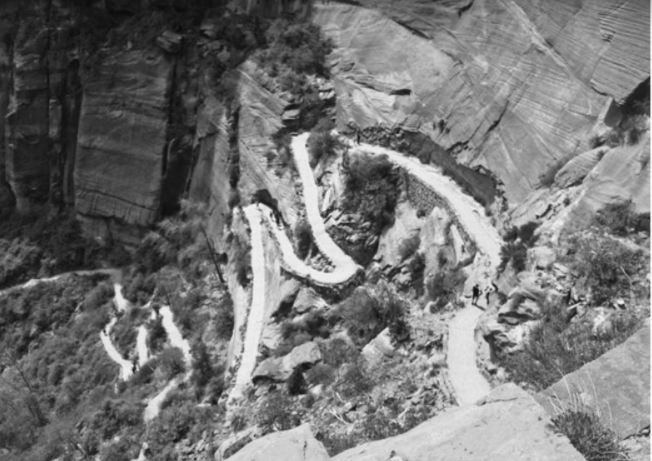Он миновал площадку для пикников около отеля «Зайон Лодж», отметка 36 миль, время – 5 часов 16 минут. Бежать оставалось 12 миль. Учитывая предстоящий подъем, сложность трассы и усиливающуюся жару, он мог рассчитывать пройти их самое меньшее за 2,5 часа.
Предстоял сложный подъем по тропе Ист-Рим, где нужно было набрать более 2000 футов всего за несколько миль. Солнце палило нещадно, ни облачка, ни деревца, чтобы укрыться в тени. Трэвис еще подкрепился, залил в себя воды и повторил свою позитивную мантру:
Ты можешь, Трэв. Чем труднее приходится, тем сильнее ты становишься.
Незадолго до того забега он начал готовить Чарльза, парня из его группы поддержки, к его первому сверхмарафону. Он месяцами слушал рассказы о Зайоне и загорелся желанием попробовать этот маршрут. Мэйси позвал его пробежать последние 12 миль до финиша.
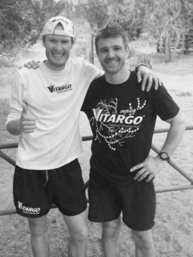На этом участке трассы они видели постоянный поток гуляющих. В отличие от встреченных им прежде людей эти ребята совсем не пугались; они поддерживали и подбадривали бегунов. Когда полуденное солнце начало поджаривать, Чарльз попросил помощи у одного особо запасливого туриста – боковые карманы его рюкзака распирали бутылки с водой.
– Не найдется водички вот для этого парня? – спросил Чарльз, бежавший впереди. – Он сегодня бежит через весь парк!
– Весь парк?! Конечно, найдется!
И парень вылил на Трэвиса целую бутылку воды, пока тот тащился в гору мимо него, что очень освежило и взбодрило на финишном участке по пустыне.
Поднявшись на плато, парни снова оказались одни и продолжали двигаться дальше.
За несколько миль до финиша Мэйси сбавил темп и слегка отстал от Чарльза, который бежал очень хорошо, хотя у него было меньше опыта и подготовки. Неожиданно словно из-под земли появился Ник: он оставил машину на финише и пришел к на финишную прямую. «Давайте, ребята! Жмите!» Эхо отдалось от скал и взбодрило Трэвиса и Чарльза, оба прибавили темп.
Думая о любимой семье, Трэвис пересек финиш со временем 7 часов 27 минут, вместе с двумя друзьями.
Оркестр не играл туш, их не атаковали камеры и репортеры, но он побил рекорд пересечения парка Зайон на 20 минут! Миссия выполнена.
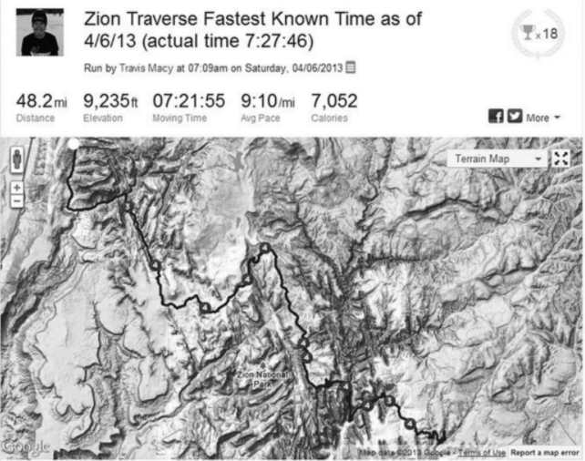Трейловый марафон
Трасса марафона включает 1925 метров подъемов, это как четырежды забежать на нью-йоркский небоскреб Эмпайр-стейт-билдинг. Покрытие: немного асфальта, несколько миль грунтовок, несколько разбитых одноколеек с кучей камней, скрытых зарослями кустарника, и огромное количество скользких, сыпучих, каменистых и крутых старых дорог на рудники.
В 2013 году в серии Leadman участвовали 69 мужчин и 18 женщин. У них были разные цели и разный жизненный опыт, но у всех была одна миссия: пройти пять сложных и длинных горных гонок за шесть недель.
Первая гонка серии, ледвиллский трейловый марафон, задавала тон всем последующим шести неделям. В день забега по выстрелу стартового пистолета многие рванули вперед в хорошем темпе.
Начиная со старта, трасса постоянно идет вверх от отметки 3100 метров в центре Ледвилла до высоты почти 3710 метров на горе Болл. Прямо перед самой высокой точкой есть очень крутой отрезок – он был хорошо знаком Трэвису по горной велогонке Silver Rush 50 Mountain Bike Race, – и он немного поберег силы и прошелся там энергичным шагом. Его план был таков: беречь себя и идти в стабильном темпе первые 16 миль, а затем уже включаться в серьезную гонку; необходимой составляющей этого плана были правильное питание и гидратация (как, впрочем, в любой гонке на длинную дистанцию).
На первом участке марафона Трэвис тянул понемножку свою первую бутылку «Витарго», ее хватило до первого пункта питания на отметке 10 миль, удобно расположенного у подножия трехмильного подъема на 608 метров к точке разворота на перевале Москито-Пасс, высота 4009 метров. Шесть особо крутых и каменистых миль подъема и спуска с Москито были ключевым этапом гонки, и Трэв с большой надеждой ожидал встречи с другом Тимом, который должен был доставить полную бутылку «топлива» на пункт питания. С такой дозаправкой он рассчитывал отыграть на крутом участке немного времени у Томсона, который на тот момент опережал его на две-три минуты.
Площадка на пункте питания была забита полумарафонцами (их трасса вновь соединялась с марафонской и тоже шла на перевал Москито и обратно), по обочинам толпились болельщики, звонили в колокольчики, аплодировали, и Трэвис бежал через этот гвалт, пытаясь высмотреть Тима и заветную бутылочку. Мэйси подумал, что друг должен быть в толпе людей, стоявших вдоль дороги, где-то после столов раздачи питания. Через пятьдесят ярдов толпа начала редеть, но Тима он так и не увидел, и ему стало страшно.
Он остановился, повернулся, огляделся вокруг и заорал: «Тим!» Обернулось много народу, но Тима среди них не было, и некому было предложить бутылку «Витарго» или хоть что-нибудь.
В соревнованиях, как и в жизни, мышление может удивительно быстро переключаться из режима позитива и уверенности в состояние страха и сомнений, и в считаные секунды Мэйси охватило смятение.
Но голос веско возразил: Не ной.
Здесь это правило подходило. Да, пришлось протолкаться через толпу не претендующих на первые места полумарафонцев, терпеливо стоявших в очереди к столам, но он гордился тем, что больше не ныл, а напихал себе под майку упаковки с питательным гелем, заправил бутылку и выдвинулся вверх по дороге. Время было потеряно, пришлось заменить излюбленное питье обычной едой и жидкостями, раздававшимися на пункте питания, но беспокойство по этому поводу ничем бы ему не помогло.
На вершине перевала Москито Трэвис был в отличной форме, и встреча с отцом, который не участвовал в гонке, но забежал туда просто в свое удовольствие, стала для него хорошим стимулом.
На обратном пути, теперь уже на отметке 16 миль, ближе к концу пункта питания, Трэв встретил Тима.
Тот извинился и рассказал об утренней пробке на дороге. Бегун сказал, чтобы он не беспокоился, потому что он сам уже был спокоен. Он преодолел страх, напомнив себе, что нельзя ныть, и приняв решение не волноваться о задержке, которая не в его власти.
На финальном повороте на Шестую улицу Ледвилла темп Трэвиса Мэйси был выше пяти минут на милю, он выкладывался на все сто, представляя себя юным бегуном в майке Университета Колорадо или школьником на двухсотметровке у тренера Хаэбе.
Томсон пересек линию финиша со временем 3:37:07, став победителем. Мэйси пересек ее со временем 3:38:52 и был ужасно рад отпраздновать этот результат с Эми, Уайаттом и Лилой, ожидавшими на финише
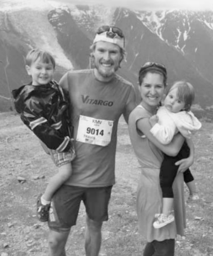Горная велогонка на 50 миль Silver Rush Mountain 50 Bike Race
Первые 90 метров трасса поднимается вертикально вверх по голому каменистому склону. Ни дороги, ни тропы. Ехать невозможно, и гонщики катят велосипеды или тащат их на себе. Но самый убойный момент в том, что в верхней части холма пространство резко сужается до одноколейки, и, чтобы оказаться на хорошей позиции, нужно бежать вверх изо всех сил. А организаторы еще и заманивают лидеров: первому мужчине или первой женщине, достигшим вершины холма, вручается серебряная монета.
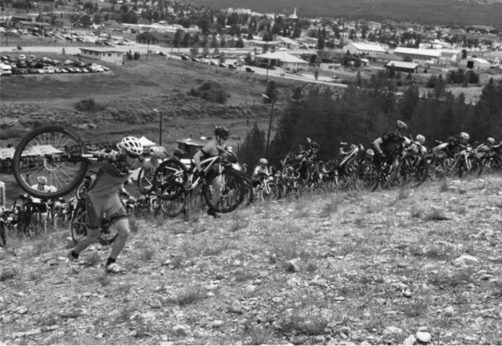После тяжелого подъема Трэвис оказался на хорошей позиции и, обогнав ближе к концу участка одноколейки одного парня, стал первым. Уже оседлав велосипеды, гонщики повернули на одну из многочисленных старых рудниковых двухколеек, которыми расчерчен ландшафт Ледвилла, и он оказался там, где и хотел, – впереди всех. Все складывалось хорошо, он был полон сил.
Чем выше мы, тем мы сильнее. Это была отличная новая мантра, и она помогала на всех подъемах второй половины гонки.
Он оказался девятым в гонке и первым среди участников Leadman, и его время 4:07 позволило ему выйти на первое место в общем зачете серии. К этому моменту они одолели уже 76 гоночных миль, но впереди оставалось еще 206. Через четыре недели должна была стартовать велогонка Leadville 100 Mountain Bike Race.
Но между этапами перед Трэвисом Мэйси встали новые испытания уже на другом фронте.
Еще в начале того года он подал заявку и был принят на учебу по магистерской программе Университета Колорадо в Боулдере для получения диплома директора школы. В тех школах, где он преподавал, он был хорошим лидером, и всем вокруг –коллегам, друзьям, родителям и жене – казалось, что ему нужно стремиться к должности директора Эвергринской средней школы. Все пророчили ему гарантированный успех на этом поприще: он отлично справится, станет общественным деятелем, будет оказывать правильное влияние на жизнь учеников, замечательно ладить с родителями и зарабатывать значительно больше, чем в должности учителя.
Только один человек сомневался в исходе эпопеи по превращению мистера Мэйси в директора школы, и этого человека звали Трэвис Мэйси. «Был ли я твердо уверен, что эта работа будет приносить мне настоящее удовлетворение? Нет. Считал ли я, если честно, что обязанности директора школы позволят мне уделять столько же времени тренировкам и общению с семьей? Нет. Думал ли я, что эта работа будет нравиться мне больше, чем преподавание? Нет. Почему же тогда я вообще стал думать об этом? Из страха, вот почему»
Примерно за неделю до стомильной велогонки я уехал после ужина на гору Эванс, она примерно в часе езды на запад от моего дома. Мне очень нужно было по примеру Эдварда Эбби побыть одному, чтобы наедине с природой поразмышлять над серьезным вопросом, который поставила передо мной жизнь. В долине, внизу на востоке, я видел огни Эвергрина, где уже спали моя жена и дети... а где-то на западе, среди темных и пустых гор, лежал Ледвилл. И я стоял между этими двумя важными точками, на распутье жизненных дорог. Я приехал туда с ночевкой, чтобы оторваться от всего и остаться наедине со своими историями, мириадами ярких звезд и самым главным вопросом:
Нужно ли мне бросить учебу на диплом директора и пойти другим путем?
И если я продолжу учиться по программе, будет ли причиной тому мое искреннее желание идти по этому пути – или меня толкнет на это страх?
Я думал о том, чего я хочу от жизни. Думал о жене и детях и о том, как дать им наилучшую поддержку. Думал об отце и о том, чему он учил меня. А больше всего думал о маме и о том, что даже в самых тяжелых условиях она отказалась подчинить свою жизнь страху.
Сидя у вершины горы Эванс, я смотрел на звезды и думал о маме. О ней, о себе и о своих страхах.
Страх – чувство естественное. Страх провала, травмы, болезни или смерти.
Вдохновленный маминым примером, в задумчивом настроении, той ночью в горах я начал писать:
Сейчас 22:10, я сижу в пикапе на высоте 3891 метр рядом с озером Саммит на горе Эванс в Скалистых горах Колорадо. Да, звезды здесь просто невероятные.
После двух пройденных гонок и в преддверии еще трех я первый в серии Leadman. Вся моя прошлая жизнь готовила меня к этим состязаниям, решение участвовать и все необходимые тренировки дались мне довольно легко. Но не все вещи в жизни проходят так просто, и я здесь прежде всего для того, чтобы принять твердое решение. Я никогда не бегал 100 миль, но мне нужно будет это сделать 17 августа, и я знаю, что пробегу их, потому что я полон внутренней решимости. Мне легко говорить об этом, и сделать это будет тоже довольно просто, хоть и придется помучиться. Иначе говоря, вариант отказаться или сдаться просто вычеркнут, и мне остается только держаться до самого финиша.
Сегодня я сделал еще один выбор: я решил отказаться от программы получения лицензии директора. Я теряю потраченные на это время и деньги, но у меня появится возможность двигаться в более важном для меня направлении.
И я даю обещание: я напишу книгу, которая поможет людям достигать своих целей и, может быть, изменит их жизнь к лучшему. Я давно хотел написать такую книгу, но страх не давал мне принять такое решение. Я знаю, что это очень трудная задача, но я рад, что во мне больше нетстраха, и рад, что твердое решение не оставляет мне шанса отказаться от этой идеи.
Никаких гарантий, и само это решение ужасно меня пугает. Но оно принято, и варианта не дойти до финиша нет; я знаю, что я дойду, и верю, что так бывает с любыми от всего сердца принятыми решениями и искренними убеждениями.
Я отлично спал той ночью и все следующие десять ночей до очередной гонки Leadman.
Стомильная горная велогонка Leadville 100 Mountain Bike Race
Как и большинство соревнований на длинные дистанции, велогонка Leadville 100 стартует рано утром, в 6:00. Это хорошо, потому что меньше времени гонки приходится на вечер. Но на высоте больше 3000 метров это значит еще, что на старте все участники обязательно дрожат от холода – и согреться получается нескоро, потому что первые несколько миль трассы – спуск по шоссе.
Трэвис успешно избежал аварий на первом отрезке, но оказался позади пары сотен других спортсменов к началу первого подъема трассы. Гонщики называют его «Сент-Кевин», это очень крутой отрезок с подъемом примерно на 578 метров за четыре мили, и он мгновенно проверяет вашу высотную акклиматизацию и общий уровень готовности.
Поднимаясь на Сент-Кевин, Трэв с радостью отмечал, что двигается вверх быстрее других и, очевидно, с меньшими усилиями.
На отметке 40 миль в хаосе зоны питания его нашел отец и передал несколько бутылок «Витарго».
Направляя энергию и упорство отца в нужное русло, он проехал следующие 10 миль в полную силу и чувствовал себя все сильнее, обгоняя ровный поток соперников на самом большом подъеме гонки к 50-й миле и развороту на Колумбайн-Майн. В голове крутились позитивные истории, и мантры снова работали.
Чем выше мы, тем мы сильнее. Давай, Трэв.
Подъем Пауэрлайн – это набор 395 метров за 3,4 мили, то есть средний уклон 7,3 процента. В Колорадо стоят дорожные знаки: «Осторожно, крутой склон – 4 процента». Понятно, что при уклоне почти в два раза большем Пауэрлайн – очень крутая дорожка, особенно если ты не на машине. Верхняя часть ее отличается особой подлостью: она никак не кончается, минуя множество ложных вершин, пока не выходит на высоту 3381 метр. И каждый раз ты думаешь, что вот уже вершина... но нет! Она все кружит и забирает вверх, кажется, бесконечно.
Мэйси еще раз спрыгнул с велосипеда и стал толкать его вверх. При этом он обошел нескольких ребят, крутивших педали, и нескольких тоже толкавших свои велосипеды. Его план питания работал, и он был полон сил, в отличие от многих соперников, которые еле держались. Он слегка подправил свою мантру:
Чем дольше путь, тем мы сильнее. Давай, Трэв.
Въезжая в город по Шестой улице и двигаясь к финишу, он не снижал темпа. Со временем 7:32 Трэвис продолжал оставаться лидером серии Leadman. Три гонки пройдены, остались две.
Забег на 10 км
После стомильной горной велогонки всегда пребываешь не в лучшем состоянии, и даже при консервативной тактике Трэвис Мэйси проснулся с негнущимися ногами и болью в мышцах. Он заправился привычной комбинацией овсянки, греческого йогурта, воды, «Витарго» и кофе и вышел на трассу – она совпадала с первыми и последними пятью километрами стомильного забега, предстоявшего через неделю. Трэвис с его тренером, Джосайей Миддахом, заранее решили, что будет не слишком разумным сильно в нем выкладываться. Это могло плохо сказаться на и без того уставших ногах, в результате чего он потерял бы 5–10 часов в настоящей гонке на следующей неделе.
Забег на 100 миль
Через неделю в четыре часа утра Трэвис стоял с тысячей других бегунов на знакомом углу Шестой и Гаррисона в Ледвилле.
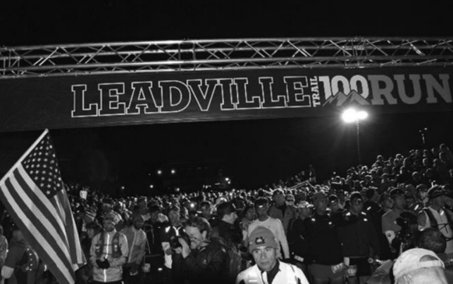Поскольку это был его первый стомильник, общий план действий для него стал таким: начать в умеренном темпе, не втягиваться в соревнование на ранних этапах, одолевать трассу шаг за шагом, думать о том, как добраться до следующего пункта питания, а не о том, как пройти всю трассу. На каждом пункте брать бутылку топлива, бутылку воды, немного еды и сухую одежду (если понадобится) у группы поддержки.
Первые 60 миль все шло неплохо для него. Он болтал в темноте с другими бегунами до первого пункта питания на 13-й миле, а затем аккуратно поднялся и спустился на Пауэрлайн, тем самым путем, что и на велогонке, и добрался до пункта Outward Bound на дистанции, примерно равной марафонской. В общем составе из 1000 человек он бежал в тридцатке лучших и немного придвинулся к лидерам по дороге на Твин-Лейкс, отметка 40 миль. Поднимаясь от Твин-Лейкс, высота почти 2800 метров, на перевал Хоуп, 3812 метров, Мэйси обошел еще нескольких соперников.
Однако на спуске с перевала Хоуп температура сильно поднялась. На высокогорных гонках не ожидаешь больших проблем с температурой, и это стало для всех неожиданностью. У Трэвиса заканчивалась вода. Заправляясь в Уинфилде, на отметке 50 миль, он был страшно рад увидеть семью...
Он не задерживался на пункте питания, зная, что дорога каждая секунда, и вскоре вновь оказался на трассе, которая сначала несколько миль круто поднималась, а затем около 10 миль шла по относительно ровной местности, к пункту Outward Bound. До финиша оставалась дистанция горного марафона.
И тут у Мэйси начались проблемы. Он сильно напрягся, пытаясь уйти от Боба и Люка на подъеме по крутой тропе Колорадо Трейл на север от подножия горы Элберт, самой высокой вершины Колорадо, 4390 метров.
Он чувствовал легкое обезвоживание; было по-прежнему очень жарко, солнце палило нещадно.
Он бежал уже больше 13 часов, а оставалось еще больше 50 километров: 31 миля – это само по себе сверхмарафон! Он никогда не бегал такие дистанции, и его начинало подташнивать. Вскоре он уже едва передвигал ноги.
Снова голос в голове. И вовсе не голос ультрамышления:
Ты пробежал уже 70 миль, дальше, чем когда-либо в своей жизни; никаких шансов, что ты сможешь бежать быстрее, чем сейчас.
Это было как письмена на стене: следующий пункт питания окажется ничем не хуже других, чтобы сойти с дистанции. Он тащился и думал, как объяснит это отцу, который приедет туда на машине:
Ноги разбиты, я обезвожен. Каждый шаг – страшная боль. Еда не глотается. Боб обошел меня, выглядит на все сто... вот вам и титул Leadman, не говоря уже о рекорде. Я действительно хотел победить, но это слишком тяжело.
Он понял, что ищет оправдания – придумывает правдоподобные объяснения своим действиям и обманывает сам себя. Это очень легко делать, когда дело принимает крутой оборот.
Он действительно устал, был слегка обезвожен и, возможно, выбыл из борьбы за титул, но – тут он сделал несколько глотков – ни одной из этих причин недостаточно, чтобы сдаться.
Нечего сдаваться, и я не сдамся. Не сдаваться.
Это стало мантрой, он продолжал бежать.
Не сдаваться.
О продолжал бежать и уже чувствовал себя получше.
Не сдаваться.
Он все бежал, село солнце и стало прохладно.
Не сдаваться.
Он бежал, и позитивные истории вновь зазвучали в нем. Они звучали громко и четко. Наступала ночь, и он сконцентрировался на вопросах «зачем», а не «что». Вспомнил «правило 4:30 утра» и свое твердое решение, подумал об эго, и о своих «морковках», и обо всех людях, на которых он хотел быть похож и которые все прошли через подобные испытания. Он вспомнил, что, по сути, это был замечательный психологический тренинг.
Линия финиша медленно приближалась, стояла глубокая холодная ночь, он думал о семье и о друзьях, которые ждали впереди. В общем, мобилизовал все установки ультрамышления, чтобы продержаться последние несколько миль самой крупной гонки в его жизни. И эту мощь ничто не в силах было остановить.
Он так старался, что смог финишировать пятнадцатым в общем зачете со временем 20 часов 15 минут. В общей сложности за всю серию гонок Leadville Race Series он пробежал и проехал 282,4 мили и набрал 13 665 метров высоты за 36 часов 20 минут. Он выиграл серию и установил новый рекорд. Не сдался. Стал победителем и получил титул Leadman – «Человек из свинца».
Валь-д’Изер: забег ITT (июль 2014)
С самого старта на гонке ITT лидеры задали приличный темп. Мокрое полотно дороги плавно поднималось в горы через лыжный курорт Валь-д’Изер. Трэвис глянул на свои часы Garmin с GPS: по городу они держали темп 5:30 минут на милю. «Немного быстрее, чем нужно для начала забега, – видимо, бушует тестостерон», – подумал он.
Вскоре они бежали уже по пересеченной местности, мимо пасущихся лошадей.
На этом этапе Мэйси бежал в лидирующей группе из 8–10 человек. Темп был быстрым, но вполне комфортным. Они начали подъем по круто забирающей вверх грязной одноколейке, идущей от Валь д’Изер в горы повыше деревушки Тиньес.
Потом начался длинный спуск по каменистому рельефу, который развезло от дождя. Здесь он понял, что при всей тщательности сборов и проверок допустил ошибку: налобный фонарик был слишком слабым для такой гонки. Хотя трасса была хорошо размечена оранжевыми флажками, он мог видеть лишь на несколько футов впереди себя. Вскоре он потерял из виду большинство лидеров, которые ринулись врассыпную вниз по склону.
Это был первый повод занервничать, но опыт длинных забегов велел сохранять спокойствие. «Не вешай нос!» – говорил, бывало, его отец, – все наверняка получится, если не будешь унывать и сдаваться. Благодаря ознакомительным забегам он знал, что скоро начнется длинный подъем. Трэв хорошо бегает подъемы и убеждал себя, что не страшно немного отстать на начальном этапе. Самая высокая точка этой трассы, 3653 метра, – это хорошая высота для Альп, но ему повезло: в Колорадо он регулярно бегает на значительно больших высотах
Они начали подъем на гору Гранд-Мотт, самую высокую точку всего забега. Они уже были на высоте 2095 метров и должны были меньше чем за пять километров набрать еще 1549 метров. Трасса здесь шла по разровненному горнолыжному склону. Трэвис чуть не заулыбался, когда на высоте примерно 2300 метров они увидели снег. Это играло ему на руку. Он каждую зиму тренируется в таких условиях, бегает вверх и вниз по заснеженным склонам легендарных горнолыжных курортов в Скалистых горах – Вейл, Бивер-Крик, Аспен, Уинтер-парк.
Около самой верхней точки участников ждал чудесный момент: туман поднялся, низкие облака, казалось, расступились, и неожиданно они оказались бегущими в золотистом сиянии, отраженном от белоснежного пика Гранд-Мотт, на фоне сияющего голубого неба. Это был трудный этап. Впереди было еще много миль, и Трэв знал, что его непременно настигнет упадок сил, известный каждому сверхмарафонцу. Но в тот момент он испытывал благодарность за то, что оказался там, и думал, что ему повезло. Пока внизу, в Тиньесе и Валь-д’Изере, и далеко за океаном, в Колорадо, его родные и знакомые еще сладко спали, он был здесь, наверху, у самых небесных врат.
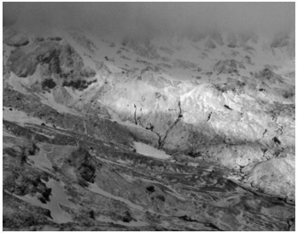В основном бежали без дорог, по грязной, а на больших высотах и заснеженной пересеченной местности. Покрытие было весьма разнообразным. Мэйси большой знаток снега: снег может быть мягким и пушистым, может быть твердым и смерзшимся, а может быть и таким, какой встречался здесь вдоль узких гряд, – плотная корка наста, а под ней рыхлая масса.
Они бежали по горам вверх и вниз, как лифты в высотке, а утро все тянулось. Десять, двадцать, тридцать миль… На отметке 34 мили – бежать оставалось чуть более шести – пришло время очередного подъема. На этот раз нужно было подниматься на перевал Коль-де-л’Изеран. Это самый высокий перевал в Альпах – 2987 м, – куда проложена дорога с твердым покрытием
Оставалась последняя большая горка, вверх и вниз. За семь километров предстояло набрать 684 метра высоты до Эгюй Перс, еще одного ледника на высоте 3337 метров, а затем сбросить столько же по противоположному склону. Он знал, что сможет догнать некоторых соперников на этом отрезке.
Он был уже на финальном спуске: нужно было сбросить 1172 метра за 8,8 километра. Немного потеплело, и он снял куртку и засунул ее в рюкзак, рядом с мини-кошками Kahtoola NanoSpikes, которые снял раньше, когда закончилась зона снега.
Сбегая вниз, Трэвис почувствовал какое-то шевеление сзади. Глянул через плечо – клапан рюкзака болтался на ветру: он не полностью застегнул молнию. Он остановился, снял рюкзак и увидел, что ледоступов в нем нет. «Черт, – подумал я. – Видимо, выпали. Должны быть где-то рядом». Но рядом их не было. Он пробежал пару шагов назад. Их не было и там. Часть его инстинктивно требовала забыть о ледоступах и продолжать спуск по склону к финишу. Оставалось всего четыре мили. В сверхмарафонах это равнозначно последнему кругу по стадиону.
Когда он повернул и стал подниматься обратно, вытягивая шею вправо и влево в поисках маленьких резиновых ремешков на обувь с крошечными шипами, он начал осознавать, насколько был не прав. Прошла минута. Две минуты. Тем временем сначала один… а потом и еще один парень пробежал мимо меня – те, кого Трэв недавно обогнал.
– Что случилось? – спросил один из них по-английски с французским акцентом. – Мои кошки… – ответил он. – Не видел?
Он покачал головой.
Еще подъем. И еще поиски. Никаких следов моих ледоступов.
Теперь спускался Терминатор. Он явно не ожидал увидеть Мэйси. Он показал на ноги. – Kahtoolas… то есть Yaktrax. Не видел?
Тот только покачал головой и жестом показал, что нужно бежать дальше.
Трэвис уныло продолжил подниматься. В конце концов он нашел их – они торчали из снега. Конечно же, они выпали из плохо застегнутого рюкзака. Он убил на поиски дурацких ледоступов почти девять минут. Теперь Мэйси летел вниз по склону, и внутренний спор разгорелся с новой силой – на этот раз в нем зазвенели обвинения.
Когда он, наконец, пересек линию финиша в Валь-д’Изере, был шестым со временем 8 часов 13 минут – и примерно на 35 минут отстал от д’Аэне, победителя. Пока он искал потерянное снаряжение, его обошли три соперника. В результате он скатился с третьего на шестое место на последних четырех милях забега, и это было огромным разочарованием.
В два часа ночи, когда прошли уже почти сутки с тех пор, как он встал, и ему давно пора было провалиться от усталости в глубокий сон, он продолжал бесконечно прокручивать в голове свое решение и сцену финиша. Голоса внутри не давали уснуть:
Нужно было продумать все до конца… настоящих бойцов не волнуют тонкости этики на финишной прямой крупной международной гонки. Тебя ждало место на пьедестале почета в большом европейском забеге – американцам такое нечасто удается, – и ты все провалил.
Ворочаясь с боку на бок, недовольный собой, он услышал еще один голос, вступивший в спор. В отличие от других, резких и громких, этот сначала был робким шепотом, но постепенно набирал силу и уверенность
Хватит гадать задним числом, хватит прокручивать одно и то же, довольно самобичевания. Прими свой выбор. Извлеки из него урок, прекрати себя жалеть, переключайся в позитив, еще раз дай себе слово делать все, что в твоих силах, на тренировках, соревнованиях, в отцовстве, преподавании, в работе над книгой и во всех других важных для тебя вещах.
Это заговорило ультрамышление. Он закрыл глаза, перевернулся на другой бок и уснул крепким спокойным сном.
Семь недель спустя, собравшись с силами и мыслями, выступил в гонке Ultra Race of Champions – мировом чемпионате по бегу на сверхмарафонские дистанции: горном забеге на 100 километров в Колорадо с общим набором высоты около 3040 метров, проходящем на высотах от 2980 до 3770 метров. И снова на последних этапах забега он оказался на третьем месте среди спортсменов высочайшего уровня. Чтобы поддерживать нужную мотивацию, я думал о том, как я питаюсь в забеге для поддержания оптимальной формы, и о том, почему я это делаю. Я рассказывал себе позитивные истории, стараясь взглянуть на ситуацию под другим углом, когда становилось трудно и необходимо было собраться с силами. Я думал о своем внутреннем выборе всегда доходить до финиша и о том, что для меня вариант сойти с дистанции просто не существует. Я жестко держал себя в руках, физически и психологически, изгоняя демонов Валь-д’Изера. И на этот раз не было внутренних споров, запоздалых сожалений, неистовых самокопаний, да к тому же и никаких ледоступов.
Я уверенно финишировал третьим.
Трудности – неотъемлемая часть нашей жизни. Если рассматривать их как положительные и даже необходимые средства психологической подготовки, можно постепенно, камень за камнем, выстроить бастион внутренней прочности, которая позволит дойти до победного конца во всем, на что вы по-настоящему настроитесь.
Более того, опыт преодоления добровольно выбранных трудностей дает хороший запас сил и решимости, который позволяет достойно пройти через те испытания, что щедро и без спросу выдает нам жизнь.
Какую цель вы поставили перед собой? Это может быть что угодно другое, что вам нравится, интересно или необходимо. В контексте ультрамышления такие цели и занятия позволяют выковать необходимую психологическую устойчивость, которая проведет вас через настоящие жизненные трудности: те, что связаны с семьей, карьерой, болезнями, старением родителей, деньгами и прочим. Трудности, которые возникают независимо от вашего желания, вы встретите во всеоружии благодаря опыту добровольного решения сложных задач.
В установке «Все это хороший психологический тренинг» слово «хороший» передает не только масштаб и интенсивность этого опыта. Оно имеет и самый буквальный смысл и говорит о позитивном значении психологического тренинга в жизни. На этом основаны все принципы ультрамышления.
Выбери те принципы, что работают для тебя, примени их в жизни, поставь перед собой большую цель, достигни предельной эффективности в ее выполнении и выйди победителем; тогда в следующий раз сможешь достичь еще большего.
Давайте начнем с принципа психологического тренинга. Относитесь к тренировке умственной, психологической выносливости так же, как вы относитесь к тренировке выносливости мышечной. А еще лучше – как к тренировке одной из систем организма, например сердечно-сосудистой и дыхательной. Чтобы подготовить их к определенной задаче, к соревнованию, необходим специальный комплекс тренировок и имитация реальных условий для их адаптации. Психологический тренинг основан на тех же принципах. В вышедшей в 2010 году книге Succeed: How We Can Reach Our Goals психолог-исследователь Хайди Грант Хэлворсон говорит, что необходимым условием для достижения успеха служит самоконтроль. Чтобы достичь цели, часто приходится делать что-то, что вам не нравится или кажется невыполнимым. Именно в такие моменты решающую роль играют наработанные навыки самоконтроля.
Еще один подход для психологического тренинга, взятый из когнитивной психологии. Это концепция «когнитивной переоценки»: переосмысление или новое истолкование ситуации. Наш мозг наделяет ситуацию новым значением и реагирует на нее соответствующим образом. На практике это означает вот что: если вам что-то не нравится, попробуйте перестать думать о том, как все плохо, взгляните на происходящее по-новому. Скажите себе: «Это хорошая тренировка для ума… Она сделает меня сильнее, гибче и подготовит к другим трудностям в жизни».)
Выбирать себе ключевые фигуры для подражания и стремиться перенять какие-то их черты – абсолютно необходимо для постановки больших целей, разработки стратегии их достижения и перехода к действиям.
Знание, что мы можем достичь большего благодаря собственным усилиям, помогает лучше справляться с неудачами и поражениями и позволяет нам рассматривать их не как «данность», но как ступени лестницы роста, лестницы, которая ведет нас в конечном счете к мастерству или по крайней мере к совершенствованию.
«Поклонники» с фиксированным сознанием рассуждают, глядя на своих кумиров, примерно так: «Мне очень хочется быть как они. Но это особенные люди, а я не обладаю нужными качествами». Убедив себя в том, что им недостает чего-то важного, такие люди приходят в уныние: «Я не настолько умен», «Я не так талантлив», «Я недостаточно привлекателен». Они не учатся у людей, которыми восхищаются, но завидуют им, возмущаются, злятся и расстраиваются.
Однако «подражатели» с гибким сознанием размышляют так: «Вау! Эти люди немало потрудились, чтобы добиться того, что у них есть. Мне нравится, как они держатся, как относятся к работе, как ведут дела. Наблюдая за их успехами, я могу научиться необходимым действиям и повторить их». Людей с установкой на рост воодушевляют успехи их кумиров. Зависть и возмущение при таком отношении превращаются в мотивацию, желание действовать, принять вызов. Ты говоришь себе: я могу стать лучше, могу измениться, работать упорнее и эффективнее, – и в результате становишься более похожим на того, кем восхищаешься.
Мотивация – это то, что заставляет людей оторвать зад от дивана. Мотивация стоит за любым сделанным делом. Без мотивации не было бы ни пирамид, ни шедевров искусства, ни гигантских корпораций, ни великих спортивных достижений.
Основные две разновидности – это внутренняя мотивация, которую определяют как «внутренний интерес или удовольствие, побуждающие к действиям», и внешняя мотивация, относящаяся к действиям, совершаемым «ради внешнего, материального результата».
Находить свою морковку, пусть она в итоге окажется кабачком или даже эскимо на палочке, – важная составляющая ультрамышления.
Использовать эго в понимании Трэвиса Мэйси – это говорить себе: «Тщательное планирование, позитивный настрой и несгибаемая твердость позволят мне добиться чего угодно. Я могу проиграть, и придется начать с нуля. Может понадобиться время, все может пойти не по плану, но у меня все получится, потому что я верю в себя и в свои силы».
Фокусировку мыслей на что или зачем можно использовать в приключенческих гонках, в работе и вообще в любых сложных и полезных делах.
Думать о том, что ты делаешь, хорошо, когда задача сложная, интересная и требует внимания к деталям. Думать о том, зачем ты что-то делаешь, полезно, когда относительно простая задача начинает наскучивать или слишком затягиваться.
«Правило 4:30 утра» касается не только ранних подъемов, чтобы больше успеть за день. В этом правиле есть и более глубокий смысл. Кратко – если заранее принимаешь твердое решение, то, когда приходит время действовать, уже не отвлекаешься на мысли о том, хочется тебе это делать или нет.
Смысл в том, что вы заранее берете некое обязательство и тем самым отказываетесь от дальнейшей возможности выбора по данному вопросу.
Твердое внутреннее обязательство – в отношении программы тренировок, проекта, работы, отношений, воспитания ребенка – это самое важное, что только можно сделать в жизни. С этого все начинается. Принимая для себя «правило 4:30 утра», буквально или фигурально, вы отказываетесь от любых альтернатив.
И еще «правило 4:30 утра» помогает выработать в себе весьма достойную черту, актуальную для учебы и исследовательской деятельности: упорство.
Часто в голове у нас звучат негативные истории, отражая наши подспудные тревоги и страхи. Но если записать на эту дорожку другие, новые истории, результатом могут стать ошеломительные перемены в вашем отношении к жизни, ваших возможностях и общем уровне счастья. Вспомните, как строги вы бываете к себе иногда и как это выматывает. Теперь представьте, насколько лучше можно себя чувствовать, если не нагружать себя самокопанием и критикой, а, наоборот, облегчать себе жизнь уверенностью и позитивом.
С некоторыми из этих историй, за каждой из которых стоят определенные обстоятельства, было относительно просто справиться при помощи других, «противодействующих» историй. С другими - сложнее.
Негативные истории просто необходимо переписывать и преодолевать, создавая новые. Но страшилки могут быть очень злокозненными: некоторые из них, обычно именно те, что повторяются из года в год в новой редакции, постепенно принимают форму твердых убеждений в отношении себя.
И нужно взглянуть им в глаза, оценить их размеры и признать их тем, чем они на самом деле являются: лишь историями. Ни больше ни меньше.
Иногда в результате вы понимаете также, что изматывавшая вас проблема не имеет решения. Понимание того, что проблему нельзя решить, может стать большим облегчением: то, что от вас не зависит, не должно на самом деле вас волновать. Как сказали бы психологи, оно вне «локуса вашего контроля», поэтому бессмысленно переживать по этому поводу.
Если вы делаете то, что действительно важно для вас, то, что ведет к раскрытию вашей внутренней сущности и реализации самых высоких целей в жизни, никогда не сдавайтесь из страха перед тем, что будет, если вы продолжите. Страх непременно возникнет, но это одно из обязательных условий: продолжать, несмотря ни на что. Худшее, что может случиться, – у вас ничего не получится. Но это не так уж страшно, если помнить, что все, кто ступал на путь, ведущий к успеху, непременно сталкивались с неудачами, зачастую систематическими.
С другой стороны, если вы делаете что-то, что противоречит вашей истинной сущности и вашим самым высоким целям, вероятно, вы делаете это потому, что внутренний страх приказывает вам продолжать, не сдаваться. Вы боитесь того, что случится, если вы отступите. Либо другие люди убеждают вас продолжать. Или деньги стали для вас важнее, чем счастье. Или вы давным-давно приняли решение идти этим путем и никак не решитесь от него отказаться. Если вы делаете в жизни что-то, чего вам делать не хочется, бросайте это. Истинное мужество в том, чтобы преодолеть страх и жить свою жизнь так, чтобы она была полной и осмысленной.
Люди часто сдаются там, где нужно проявить упорство, из страха перед масштабами предстоящих событий и перемен. Если хочешь достичь цели и готов взять на себя такое внутреннее обязательство, старайся разбить этот процесс на небольшие посильные этапы.
Данэль (Нелли), уроженка Эвергрина, выиграла 103 забега на снегоступах, два мировых чемпионата по приключенческим гонкам, три экспедиционные гонки Primal Quest, девять соревнований по квадратлону на горе Тейлор, четыре марафона на Пайкс Пик и длинный список прочих гонок и соревнований. В 2000 году она поднялась на все 55 вершин Колорадо высотой свыше 4000 метров за 14 дней.
Нелли широко известна как человек, выживший при падении со скалы в Моабе во время забега в декабре 2006 года, но настоящую Нелли можно описать так: хороший человек, верный друг, трудолюбивый предприниматель и очень заботливая и преданная мать двух маленьких детей. Нелли и ее муж Би Си держат ресторанчик Milt’s Stop and Eat у подножия горной велотрассы Slickrock Trail в Моабе.
Только после сорока – когда завершилась моя успешная спортивная карьера, я выжила в смертельно опасном падении и родила двоих детей – я стала вспоминать прожитые годы и поняла, какую большую роль в них сыграл мой врожденный оптимизм. Позитивный настрой не только помогает жить более полной жизнью, но и, как в моем случае, может спасти от смерти в критической ситуации.
Для меня чувство победы, свершения при пересечении финиша, подъеме на вершину или достижении любой поставленной цели с лихвой перекрывает те обстоятельства, которые нужно преодолевать по дороге. Эти обстоятельства никогда не становились для меня преградой, но скорее вызовом, который делал далекую цель еще слаще.
Я с детства участвую в соревнованиях на выносливость. Может быть, мощный выброс эндорфинов при физических нагрузках сформировал в моей голове установку: «никогда не сдавайся». Бывало трудно, и не всегда на моем лице сияла улыбка, но внутри постоянно сохранялось чувство «как это классно»: я выкладывалась по полной и жила по-настоящему. Я помню несколько случаев, когда я теряла оптимизм, и эти воспоминания не дают мне покоя, как память о совершенных преступлениях. Я до сих пор чувствую вину за те проявления негатива.
Кто-то скажет, что позитивный настрой всегда дает положительный результат лишь в теории, но я верю, что это действительно так. Я считаю, что позитивное мышление физически помогает в нужный момент открыть доступ к почти сверхчеловеческим возможностям. Доказательством этого служат дни с 13 по 15 декабря 2006 года. Я выжила при минусовой температуре (в легкой беговой одежде) с очень сильным внутренним кровотечением, вызванным переломом костей таза при падении с 18-метровой высоты. Почему? Я не теряла оптимизма. Я боролась со смертью и победила ее. Врачи утверждают, что большинство людей умирают в таких обстоятельствах от одного только переохлаждения или внутреннего кровотечения, причем для этого достаточно и четверти того времени, что я провела там одна. Когда меня спасли, мне сказали, что я могу на всю жизнь остаться в инвалидной коляске. Но спустя пять месяцев, всего через два месяца после того, как я заново научилась ходить, я пробежала 12-часовую приключенческую гонку.
Я жива, так почему бы нет?
С возрастом страсть к соревнованиям несколько утихла; воспитывая детей и занимаясь бизнесом, я стала более терпеливой и спокойной. Но я по-прежнему, а может даже и в большей степени, уверена, что позитивный настрой – основной залог счастья. Каждый день я понимаю, как мне повезло остаться в живых и иметь возможность проживать все эти неизбежные взлеты и падения. Чувство победы мне приносят счастье моих детей и успех нашего бизнеса. Но моя жажда к исследованию вольных просторов и покорению расстояний по-прежнему велика и дает мне цель, к которой можно стремиться. Думаю, если ставить перед собой достижимую цель, путь к ней всегда будет позитивным. Такой целью может стать первый шаг с инвалидной коляски. Или отмена всех планов ради ухода за больным ребенком. Или подъем на вершину… в рекордное время!
Нелли
Звезда международных гонок на выносливость, сотрудник пожарной службы и мать троих детей, Эмма долгое время была признанной королевой Испании в экстремальных видах спорта. Она была капитаном команды, выигравшей чемпионат мира по приключенческим гонкам 2010 года, она выиграла массу гонок, ультрамарафонов, соревнований по ски-альпинизму и разных других состязаний на выносливость по всему миру. Сейчас Эмме 41 год, она входит в международную элиту сверхмарафонцев.
У Эммы замечательный муж, Дэвид Ровира, и трое маленьких детей. Она продолжает работать горным спасателем и пожарным (в Испании всего несколько женщин занимается такой работой), читать лекции и писать. Она работает над докторской по биохимии, часть этой работы – ее проект по изучению тренировок и забегов на сверхдлинные дистанции SUMMIT Project. Стойкость, оптимизм и умение жить здесь и сейчас, развитые ею в спорте, помогают ей растить детей, строить отношения и работать.
Девочке было непросто расти спортсменкой в Испании в 70–80-е годы, потому что у меня почти не было образцов для подражания, а общество требовало заниматься чем-нибудь другим. Когда я стала одной из первых пяти профессиональных женщин-пожарных в Каталонии в 1998 году, я столкнулась с еще большей предвзятостью и препонами. Мои участия в гонках и работа во многом были бесконечной борьбой на трудном подъеме, ведь мне вместе с другими женщинами-спортсменами приходилось впервые прокладывать путь для следующих поколений женщин.
Однако когда мы решили завести детей, мне захотелось увидеть пример матерей, которые смогли посвятить себя семье и продолжить при этом следовать за своими мечтами. К счастью, я нашла несколько таких примеров, и то, чему я научилась у них, помогло мне сохранить баланс в моей профессиональной, семейной и спортивной жизни.
Я смотрю на Джоан Сомаррибу, велосипедистку, выигравшую гонки «Тур де Франс», «Джиро д’Италия» и чемпионат мира по велогонкам, у которой тоже трое детей. Меня вдохновляет пример Полы Рэдклифф, мамы и рекордсменки мира в марафоне. Баскская скалолазка мирового уровня Джосун Березиарту воодушевляет меня тем, что в своем виде спорта на равных соперничает с мужчинами.
Во всем, что я делаю – тренируюсь или бегу сверхмарафон, тушу пожары, провожу медицинские исследования или ращу своих детей, – мне помогают положительные примеры других людей.
Эмма
В 2011 году Дэйв стал лучшим сверхмарафонцем года в Северной Америке по версии журнала UltraRunning Magazine, он выиграл множество соревнований, от забегов на 50 километров до многодневных гонок. В свои 44 года он продолжает устанавливать рекорды трасс, включая гонку Quad Dipsea в Калифорнии, которая проводится уже 31 год.
Дэйв – преданный муж и отец двух маленьких детей. Получил два высших образования, когда ему было уже за сорок: диплом фельдшера и степень магистра в области общественного здравоохранения. Сейчас он работает врачом в Боулдере, при этом профессионально занимаясь бегом и уделяя много времени своей семье. Он очень приятный, прочно стоящий на земле человек.
Когда в 39 лет я решил снова пойти учиться (на фельдшера), я понимал, что нужно будет совмещать учебу с работой. Я занимался по ночам и по выходным. Моя жена, учитель, поступила героически и взяла на себя большую часть обязанностей кормильца семьи в тот период, когда мне пришлось сократить рабочие часы. Эта учеба была, вероятно, самым сложным периодом моей жизни. Тем не менее в это же время я стал ультрамарафонцем года.
Как мне это удалось? Ну, прежде всего я был очень упорным. Я участвовал в забегах, приходил на учебу и садился за учебники. Я занимался допоздна, рано вставал на пробежки и слушал аудиозаписи уроков во время тренировок. Я делал все, что нужно, чтобы достичь моей цели. В процессе я понял, что мы определяем свои границы лишь на основе имеющегося у нас опыта. Я осознал, как важно перестать ныть, взбодриться и продолжать пахать. Мой старый школьный тренер по бегу по пересеченной местности говорил, что в 90 процентах тех случаев, когда ты считаешь, что уже не можешь бежать быстрее, ты, скорее всего, можешь. Думаю, это верно и в отношении жизни вообще, работы, карьеры. Вероятно, ты можешь больше, чем тебе казалось. Нужно только найти правильную морковку.
Дэйв
Джосайя входит в ряды мировой спортивной элиты в дисциплине кросс-триатлон. Он показывает блестящие результаты в этом виде триатлона, где нужно ездить на горном велосипеде и бегать по пересеченной местности. Джосайя – десятикратный чемпион США по кросс-триатлону, и он очень много работал, чтобы достичь таких результатов. За последние десять лет он не проиграл ни одного забега на снегоступах, и в Колорадо он признанный авторитет и лидер в горных мультиспортивных гонках. Джосайя тренирует других спортсменов и не жалеет при этом ни времени, ни мудрости, даже если нужно готовить программы тренировок для юнцов, которые стремятся однажды победить его самого.
Джосайя – очень открытый и честный человек, спокоен и уверен во всем, что касается тренировок, соревнований, наставничества и воспитания детей. Хотя в своем виде спорта он уже достиг высшего уровня, он постоянно совершенствуется. Несколько лет назад он получил степень магистра в области биомеханики движений человека и сейчас применяет эти знания на практике в работе тренером и в тренировках. Джосайя живет в Игл-Вейл и много времени отводит роли преданного мужа и отца трех маленьких детей.
Несколько лет назад я оказался на распутье в связи с моей профессиональной соревновательной и тренерской деятельностью. Мне сделали операцию на колене, жена носила нашего третьего малыша, и мое будущее в большом спорте представлялось весьма туманным. Нужно было выяснить, существует ли какая-нибудь секретная комбинация или последовательность тренировок, известная только нескольким тренерам в мире, которая позволит мне достичь максимальной результативности. У нас соревновательный сезон продолжается девять месяцев в году, и мне нужно было решение, позволяющее достигать пика результативности по нескольку раз за год, но у меня были еще семья и карьера, поэтому требовалась методика, позволяющая получать максимум за оптимальное время.
Применив принцип Трэвиса («нужно задвинуть свое эго подальше и попросить помощи»), я вынужден был признать, что не могу ответить на все вопросы сам. И я решил получить магистерскую степень в области биохимии движений человека в Университете наук о здоровье имени Э. Т. Стилл в Месе, штат Аризона. В шутку я называю свое образование магистерской степенью в триатлоне, потому что с самого начала учебы решил направить все силы на получение максимального количества ответов на вопросы, связанные с тренировками на выносливость.
Серьезным аргументом в пользу этой программы обучения для меня стала возможность учиться у одного из лучших тренеров по бегу и большого авторитета в области высотных тренировок на выносливость доктора Джека Дэниелса. Под его руководством я написал ряд научных работ, которые, по сути, стали основой моей новой программы тренировок. Помимо прочего, эта программа включала новую модель периодизации и выходов на пиковые нагрузки, а также новые идеи по поводу высотных тренировок и общеукрепляющих программ для триатлетов. Все это было построено на передовых исследованиях, с которыми я познакомился при написании дипломного проекта. То есть я принял помощь доктора Дэниелса и его коллег и смог помочь себе сам. Рад сообщить, что, отодвинув на время свое эго, я только помог ему укрепиться! С тех пор как я окончил учебу, я выиграл еще три национальных чемпионата по кросс-триатлону XTERRA Triathlon.
Джосайя
Сэм занимается бегом на тренажере и по пересеченной местности в Военно-воздушной академии Соединенных Штатов в Колорадо-Спрингс. Во время учебы в Эвергринской средней школе она стала чемпионкой штата по бегу.
Сэм – целеустремленная девушка, она проявляет исключительное упорство и в беге, и в учебе, и в военной подготовке в академии. При этом она вполне типичная студентка, любит проводить время с семьей и друзьями, путешествовать и участвовать в разного рода приключениях на природе.
Когда я поступила в Военно-воздушную академию США, я еще не вполне понимала, что мне предстояло стать не просто спортсменом-студентом. Я стала курсантом. И кроме тренировок и учебы мне еженедельно предстояли часы военной подготовки.
Эта часть моей жизни началась в 7:30 утра 27 июня 2013 года, когда я приступила к «Базовому курсу» – начальному курсу интенсивных тренировок, психологически и физически подтягивающему всех первокурсников академии. Я сразу же оказалась лицом к лицу с пожилым агрессивным инструктором, который на перекличке орал во всю глотку прямо мне в лицо. В тот момент я поняла, что это станет моей жизнью на ближайшие семь с лишним лет. Я не знала, что думать и как поступить. Поговорить было не с кем. Я была отрезана от мира. Я фокусировалась только на своих действиях. Я бегала и падала лицом вниз по команде. Я следовала всем однообразным приказам – мылась в душе за минуту, складывала форму в идеальные квадраты со стороной 10 дюймов. Я ужасно тосковала и смотрела в будущее без всякой надежды.
Но все изменилось, когда я однажды поняла, для чего все это делаю. Я вступила в ряды ВВС США, не просто чтобы стать бегуном или студентом; я пошла туда, чтобы показать родителям, какую дочь они вырастили. И в этот момент крик, моральное истощение и физическая боль стали вполне терпимыми. Подтягиваясь, я представляла, что показываю родителям, какая я сильная; выживая при трехчасовом режиме сна, демонстрировала им свою решимость; а надевая форму, думала о том, как они могут мной гордиться.
После поступления в Академию ВВС мой день расписан с пяти утра до полуночи: военная подготовка, учеба, строевая подготовка и тренировки каждый день – на три года вперед. Поначалу эта мысль была невыносима. Я хотела сбежать, наслаждаться студенческой жизнью и свободой, но потом вспомнила о том, зачем я это делаю, и с тех пор я никогда не оглядывалась назад.
Сэм
Всю свою юность Пэм бегала по стадионам, по пересеченной местности и по шоссе, но после рождения детей потеряла форму. В январе 2008 года она решила вернуться в бег и с тех пор достигла больших высот на сверхдлинных дистанциях: она пробежала больше 50 сверхмарафонов и выиграла некоторые из них, включая престижный стомильник Western States, забеги Miwok на 100 км и American River на 50 миль. Пэм пишет о своих достижениях в блоге «Путь черепахи».
Пэм была самым юным выпускником медицинской школы Университета Темпл. Она живет в городе Салем, работает патологоанатомом и воспитывает двоих детей.
Как мать я считаю, что бег на сверхдлинные дистанции позволяет формировать многие жизненно важные навыки, которым я надеюсь научить и своих детей: решимость, настойчивость, умение ставить цели, раздвигать свои границы и усердно работать. А еще я надеюсь, что дети видят энтузиазм и радость, которые приносит мне активный образ жизни. Да, я бегаю потому, что люблю бегать, но при этом я надеюсь также, что в перспективе мои занятия бегом помогут и моим детям научиться следовать за своей мечтой. Так приятно чувствовать, что дети мною гордятся (по крайней мере, пока не стали подростками!).
В 2010 году на стомильной гонке Angeles Crest я не подумала о том, как важен может быть мой бег для моих детей. Было очень жарко, я сильно устала, и у меня начало болеть колено. В какой-то момент мне стало уже все равно, и я сошла с дистанции. Конечно, у меня были на то причины, но, когда тем вечером моя пятилетняя дочь Меган спросила: «Мамочка, почему ты сошла?» – я не нашлась что ей ответить. На следующее утро она посмотрела на меня широко распахнутыми глазами и сказала: «Мамочка, так жалко, что ты не финишировала», и это было для меня как нож в сердце. Я поклялась тогда делать все, что в моих силах, чтобы доходить до финиша.
Мне точно не хотелось услышать такое еще раз. К забегу Western States Endurance Run 2013 года я тренировалась с особым упорством. Очень строго выстроила систему питания и не упускала из виду ни малейшей детали, составляя исключительно надежный план для забега. «Правило 4:30 утра» стало неотъемлемой частью моего распорядка дня и общего психологического настроя, без этого мне ни за что не удалось бы воспитывать детей и параллельно работать патологоанатомом и тренироваться на столь высоком уровне.
В итоге все детали сложились вместе в удивительную гонку, которую я выиграла с отрывом более чем 40 минут. Меган (которой было уже восемь) пробежала со мной финишные 250 метров. Воспоминание о том, как мы вместе пересекли финишную черту, до сих пор наполняет меня гордостью и радостью. Это был триумф после неудач, и я надеюсь, что и для нее это событие и этот урок запомнятся на всю жизнь.
Пэм
Рэй описывает себя как «заядлого курильщика, который понял однажды, что пора что-то менять в жизни». Он выбрал для этого спорт, открыл для себя сверхмарафоны и вскоре уже бегал их по всему миру. В конце концов он с двумя другими бегунами совершил эпический пробег через всю пустыню Сахара, 7500 километров за 111 дней.
Рэй создал обучающую и мотивирующую платформу на сайте i2P (www.impossible2Possible.com), где можно создавать и делиться с другими «приключениями, которые вдохновляют и учат молодежь беречь эту хрупкую планету и ее обитателей».
Рэй
Робин – одна из американских легенд первых приключенческих гонок, она поднималась на пьедесталы почета гонок Eco-Challenge и «Рейд Голуаз» в 1990-х и 2000-х годах. Робин выступала вместе с командой Team Merrell в конце ее спортивной карьеры, где они заняли второе место в гонке Primal Quest в Монтане в 2008 году. Робин не только чемпионка мира в приключенческих гонках, но и обладатель занесенного в Книгу Гиннесса рекорда в каякинге и гребле на доске стоя, а также многократная обладательница титула Ironwoman.
Робин никогда не сидит на месте. Она руководит женской пожарной командой в Калифорнии, успешно занимается предпринимательской деятельностью, входит в список авторов бестселлеров по версии New York Times («Как добиваться победы», 2012 год), является основателем и «главной по мечтам» фонда Project Athena Foundation – некоммерческой организации, поддерживающей женщин, переживших очень серьезные проблемы со здоровьем, изменившие их жизнь, в достижении спортивных целей и обретении новых физических возможностей.
Сколько раз за свою жизнь мы откладывали что-то, потому что «мы не готовы», «нам нужно еще время», «нам некомфортно» и так далее? Я финишировала в десяти триатлонах Ironman и более чем в сорока десятидневных непрерывных приключенческих гонках по самым глухим уголкам нашей планеты. И вот в чем секрет: я не чувствовала себя «готовой» ни к одной из них и всегда чего-то боялась.
Я всегда знала, что могла бы больше тренироваться, что нужно больше времени, чтобы лучше подготовиться, или что хорошо бы отложить старт до момента, когда я почувствую в себе больше сил. По правде говоря, я, наверное, никогда бы не вышла на старт и не рискнула отправиться в неизведанное – в физическом, эмоциональном и личностном плане, – если бы в календаре не была обозначена четкая дата и специальный человек с мегафоном не кричал бы в этот день «Марш!». Но я так рада, что все-таки выходила и рисковала.
Формирование характера
Только вы знаете, что творится у вас в голове. Помните, что для внешнего мира вы на 100 процентов выглядите как деловой человек, триатлет, писатель или человек, достигший успехов в других областях (впишите на свое усмотрение).
Увидьте себя таким, каким вам хотелось бы, чтобы вас видели другие: уверенным, умным, талантливым.
А затем станьте таким человеком. Например, я абсолютный интроверт и при этом зарабатываю деньги лекциями. Как такое может быть? Прямо перед выходом на сцену я думаю о человеке, которого ожидает увидеть публика (а не о себе, напуганной предстоящим!), и в тот момент, когда меня вызывают на сцену, я становлюсь этим человеком.
Делайте при любых обстоятельствах
То, что вы делаете, гораздо важнее того, что вы при этом чувствуете. Принимайте как данность тот испуг, волнение и чувство неловкости, которые обязательно возникают, когда вы подходите к этому символическому обрыву и начинаете спуск с него. Это цена, которую приходится платить за возможность вести уникальную, исключительную жизнь! Единственная разница между вами и человеком, который воплотил в жизнь свои мечты, заключается в том, что этот человек действовал, невзирая на страх. Страх обязательно возникает, когда мы сталкиваемся с рисками. Я научилась относиться к нему как к бдительному стражу и надежному другу, который заставляет меня быть начеку и делать все, что в моих силах.
Робин